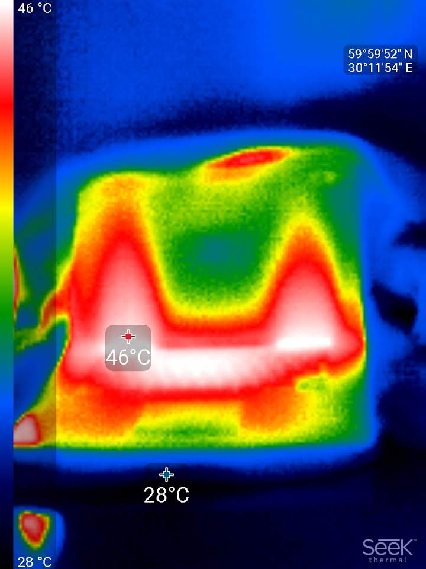

name: template-default layout: true <div id="slide-controller"> <div id="slide-prev" style="display: inline-block;" onclick="slideshow.gotoPreviousSlide()">◀</div> <div id="slide-next" style="display: inline-block;" onclick="slideshow.gotoNextSlide()">▶</div> </div> --- name: template-title layout: true template: template-default class: slide-title, center --- name: template-section layout: true template: template-default class: slide-section, center, middle --- name: template-page layout: true template: template-default class: slide-page --- name: template-comics layout: true template: template-default class: slide-comics --- template: template-title # Поговорим про перфоманс-анализ ## Андрей Акиньшин, JetBrains ### DotNext Piter, 16.06.2020 --- layout: true template: template-page --- class: normal ### Типичный день перфоманс-инженера .up7[] .center-wide[  ] --- class: normal count: false ### Типичный день любого инженера .up7[] .center-wide[  ] --- class: normal ### Четыре главные задачи перфоманс-анализа -- .dashboard-table[ <table class="invisible-table"> <tr> <td></td> <td></td> </tr> <tr class="hint-row"> <td>Анализ распределений</td> <td></td> </tr> <tr> <td></td> <td></td> </tr> <tr class="hint-row"> <td></td> <td></td> </tr> </table> ] --- class: normal count: false ### Четыре главные задачи перфоманс-анализа .dashboard-table[ <table class="invisible-table"> <tr> <td></td> <td></td> </tr> <tr class="hint-row"> <td>Анализ распределений</td> <td>Сравнение бенчмарков</td> </tr> <tr> <td></td> <td></td> </tr> <tr class="hint-row"> <td></td> <td></td> </tr> </table> ] --- class: normal count: false ### Четыре главные задачи перфоманс-анализа .dashboard-table[ <table class="invisible-table"> <tr> <td></td> <td></td> </tr> <tr class="hint-row"> <td>Анализ распределений</td> <td>Сравнение бенчмарков</td> </tr> <tr> <td></td> <td></td> </tr> <tr class="hint-row"> <td>Анализ истории</td> <td></td> </tr> </table> ] --- class: normal count: false ### Четыре главные задачи перфоманс-анализа .dashboard-table[ <table class="invisible-table"> <tr> <td></td> <td></td> </tr> <tr class="hint-row"> <td>Анализ распределений</td> <td>Сравнение бенчмарков</td> </tr> <tr> <td></td> <td></td> </tr> <tr class="hint-row"> <td>Анализ истории</td> <td>Перфоманс-тесты</td> </tr> </table> ] --- class: normal ### Источники вдохновения .up[] -- .center[] -- <div style="position: absolute; right: 9%; top: 10%"> <svg xmlns="http://www.w3.org/2000/svg" xmlns:xlink="http://www.w3.org/1999/xlink" width="88" height="25"> <rect x="00" width="100%" height="25" fill="#555"/> <rect x="49" width="100%" height="25" fill="#4c1"/> <g fill="#fff" font-family="Ubuntu Mono" font-size="16"> <text x="5" y="19" textLength="80">stars 5403</text> </g> </svg> <svg xmlns="http://www.w3.org/2000/svg" xmlns:xlink="http://www.w3.org/1999/xlink" width="105" height="25"> <rect x="00" width="100%" height="25" fill="#555"/> <rect x="65" width="100%" height="25" fill="#4c1"/> <g fill="#fff" font-family="Ubuntu Mono" font-size="16"> <text x="5" y="19" textLength="95">used by 4239</text> </g> </svg> <svg xmlns="http://www.w3.org/2000/svg" xmlns:xlink="http://www.w3.org/1999/xlink" width="145" height="25"> <rect x="00" width="100%" height="25" fill="#555"/> <rect x="81" width="100%" height="25" fill="#4c1"/> <g fill="#fff" font-family="Ubuntu Mono" font-size="16"> <text x="5" y="19" textLength="135" class="downloadCounter">downloads 4519889</text> </g> </svg> </div> -- .center[ ] -- .center[ ] --- template: template-section ## Часть 1 ## Изучаем сырые данные --- layout: true template: template-page <div>.footer-note[(1) Изучаем сырые данные]</div> --- class: normal ### Анализируем глазами -- .up[] .center[] -- **Задачка:** если у нас есть 10'000 тестов, то какова вероятность получить такую картинку хотя бы в одном из них? --- class: normal ### Считаем вероятности .up[] .center[Предположим, что форма распределения известна:] .pull-left[] .pull-right[] -- .center[Вероятность появления "плохой" картинки:] $$ 2^{-10} = 0.0009765625 $$ -- .center[Вероятность появления хотя бы одной "плохой" картинки из 10'000:] $$ 1 - (1-2^{-10})^{10000} = 0.9999429 $$ --- class: normal ### График вероятности .up[] .center[] --- class: normal ### Закон малых чисел .up[] .center[] .bottom-hint-huge[Tversky, Amos, and Daniel Kahneman. ["Belief in the law of small numbers."](http://www.stats.org.uk/statistical-inference/TverskyKahneman1971.pdf) Psychological bulletin 76, no. 2 (1971): 105] --- class: normal ### Кто лучше всех разбирается в перфоманс-анализе? -- <table class="invisible-table" style="width: 100%;"> <tr> <td style="width: 50%;text-align: center;"></td> <td style="width: 50%;text-align: center;"></td> </tr> </table> --- class: normal count: false ### Кто лучше всех разбирается в перфоманс-анализе? <table class="invisible-table" style="width: 100%;"> <tr> <td style="width: 50%;text-align: center;"></td> <td style="width: 50%;text-align: center;"></td> </tr> <tr> <td style="width: 50%;text-align: center;">Процент угадываний: <span class="color-bad" style="font-weight: bold">20-30%</span></td> <td style="width: 50%;text-align: center;"></td> </tr> </table> ??? И тогда я пошёл к руководителю всего нашего .NET-отдела и попросил порешать те же самые перфомансные задачки (драматическая пауза) его кошку. --- class: normal count: false ### Кто лучше всех разбирается в перфоманс-анализе? <table class="invisible-table" style="width: 100%;"> <tr> <td style="width: 50%;text-align: center;"></td> <td style="width: 50%;text-align: center;"></td> </tr> <tr> <td style="width: 50%;text-align: center;">Процент угадываний: <span class="color-bad" style="font-weight: bold">20-30%</span></td> <td style="width: 50%;text-align: center;"></td> </tr> </table> --- class: normal count: false ### Кто лучше всех разбирается в перфоманс-анализе? <table class="invisible-table" style="width: 100%;"> <tr> <td style="width: 50%;text-align: center;"></td> <td style="width: 50%;text-align: center;"></td> </tr> <tr> <td style="width: 50%;text-align: center;">Процент угадываний: <span class="color-bad" style="font-weight: bold">20-30%</span></td> <td style="width: 50%;text-align: center;"></td> </tr> </table> --- class: normal count: false ### Кто лучше всех разбирается в перфоманс-анализе? <table class="invisible-table" style="width: 100%;"> <tr> <td style="width: 50%;text-align: center;"></td> <td style="width: 50%;text-align: center;"></td> </tr> <tr> <td style="width: 50%;text-align: center;">Процент угадываний: <span class="color-bad" style="font-weight: bold">20-30%</span></td> <td style="width: 50%;text-align: center;"></td> </tr> </table> --- class: normal count: false ### Кто лучше всех разбирается в перфоманс-анализе? <table class="invisible-table" style="width: 100%;"> <tr> <td style="width: 50%;text-align: center;"></td> <td style="width: 50%;text-align: center;"></td> </tr> <tr> <td style="width: 50%;text-align: center;">Процент угадываний: <span class="color-bad" style="font-weight: bold">20-30%</span></td> <td style="width: 50%;text-align: center;">Процент угадываний: <span class="color-good" style="font-weight: bold">45-55%</span></td> </tr> </table> --- class: normal count: false ### Кто лучше всех разбирается в перфоманс-анализе? <table class="invisible-table" style="width: 100%;"> <tr> <td style="width: 50%;text-align: center;"></td> <td style="width: 50%;text-align: center;"></td> </tr> <tr> <td style="width: 50%;text-align: center;">Процент угадываний: <span class="color-bad" style="font-weight: bold">20-30%</span></td> <td style="width: 50%;text-align: center;">Процент угадываний: <span class="color-good" style="font-weight: bold">45-55%</span></td> </tr> </table> --- class: normal count: false ### Кто лучше всех разбирается в перфоманс-анализе? <table class="invisible-table" style="width: 100%;"> <tr> <td style="width: 50%;text-align: center;"></td> <td style="width: 50%;text-align: center;"></td> </tr> <tr> <td style="width: 50%;text-align: center;">Процент угадываний: <span class="color-bad" style="font-weight: bold">20-30%</span></td> <td style="width: 50%;text-align: center;">Процент угадываний: <span class="color-good" style="font-weight: bold">45-55%</span></td> </tr> </table> --- class: normal ### Нужно запомнить .memorize[Сырые данные<br />контринтуитивны и обманчивы] --- template: template-comics .center[] .comics[ Но если пользоваться интуицией опасно,<br />то как правильно изучать данные? ] --- template: template-section ## Часть 2 ## Изучаем сводные метрики --- layout: true template: template-page <div>.footer-note[(2) Изучаем сводные метрики]</div> --- class: normal ### Нормальное распределение .up[] .center[] -- .up[] <div style="font-size: 70%"> .c[ > *Нормальность — это миф; никогда не было и никогда не будет ни одного нормального распределения.* > ["Testing for normality"](http://webspace.ship.edu/pgmarr/Geo441/Readings/Geary%201947%20-%20Testing%20for%20Normality.pdf), R.C. Geary, 1947 ] </div> --- class: normal ### Проведём эксперимент .up[] .size-75[ .center[ <pre><code class="md hljs markdown remark-code"><div class="remark-code-line">| Метод | Среднее | Стандартное отклонение | Медиана |</div> <div class="remark-code-line">|-------|----------|------------------------|----------|</div> <div class="remark-code-line"><span style="color:#D55E00">| A | <span class="hljs-code"><span class="remark-code-span-highlighted">136.2 мс</span></span> | 56.92 мс | 107.0 мс |</span></div> <div class="remark-code-line"><span style="color:#56B4E9">| B | <span class="hljs-code"><span class="remark-code-span-highlighted">133.7 мс</span></span> | 12.20 мс | 130.2 мс |</span></div> </code></pre> ] ] -- .up1[] .pull-left[.center[]] -- .pull-right[.center[]] --- class: normal ### Квартет Энскомба <table class="invisible-table" style="margin-top:-0.5rem;width:100%"> <tr><td style="width:60%;"> <table class="visible-table" style="text-align: right"> <tr><th colspan="2">I</th><th colspan="2">II</th><th colspan="2">III</th><th colspan="2">IV</th></tr> <tr> <td>x </td> <td>y </td> <td>x </td> <td>y </td> <td>x </td> <td>y </td> <td>x </td> <td>y </td></tr> <tr> <td>10,0</td> <td>8,04</td> <td>10,0</td> <td>9,14</td> <td>10,0</td> <td>7,46</td> <td>8,0</td> <td>6,58 </td></tr> <tr> <td>8,0</td> <td>6,95</td> <td>8,0</td> <td>8,14</td> <td>8,0</td> <td>6,77</td> <td>8,0</td> <td>5,76 </td></tr> <tr> <td>13,0</td> <td>7,58</td> <td>13,0</td> <td>8,74</td> <td>13,0</td> <td>12,74</td> <td>8,0</td> <td>7,71 </td></tr> <tr> <td>9,0</td> <td>8,81</td> <td>9,0</td> <td>8,77</td> <td>9,0</td> <td>7,11</td> <td>8,0</td> <td>8,84 </td></tr> <tr> <td>11,0</td> <td>8,33</td> <td>11,0</td> <td>9,26</td> <td>11,0</td> <td>7,81</td> <td>8,0</td> <td>8,47 </td></tr> <tr> <td>14,0</td> <td>9,96</td> <td>14,0</td> <td>8,10</td> <td>14,0</td> <td>8,84</td> <td>8,0</td> <td>7,04 </td></tr> <tr> <td>6,0</td> <td>7,24</td> <td>6,0</td> <td>6,13</td> <td>6,0</td> <td>6,08</td> <td>8,0</td> <td>5,25 </td></tr> <tr> <td>4,0</td> <td>4,26</td> <td>4,0</td> <td>3,10</td> <td>4,0</td> <td>5,39</td> <td>19,0</td> <td>12,50 </td></tr> <tr> <td>12,0</td> <td>10,84</td> <td>12,0</td> <td>9,13</td> <td>12,0</td> <td>8,15</td> <td>8,0</td> <td>5,56 </td></tr> <tr> <td>7,0</td> <td>4,82</td> <td>7,0</td> <td>7,26</td> <td>7,0</td> <td>6,42</td> <td>8,0</td> <td>7,91 </td></tr> <tr> <td>5,0</td> <td>5,68</td> <td>5,0</td> <td>4,74</td> <td>5,0</td> <td>5,73</td> <td>8,0</td> <td>6,89 </td></tr> </table> </td><td style="vertical-align:top;"> </td></tr> </table> .bottom-hint-huge[Anscombe, Francis J. ["Graphs in statistical analysis."](http://ww.w.lithoguru.com/scientist/statistics/Anscombe_Graphs%20in%20Statistical%20Analysis_1973.pdf) The american statistician 27, no. 1 (1973): 17-21.] --- class: normal count: false ### Квартет Энскомба <table class="invisible-table" style="margin-top:-0.5rem;width:100%"> <tr><td style="width:60%;"> <table class="visible-table" style="text-align: right"> <tr><th colspan="2">I</th><th colspan="2">II</th><th colspan="2">III</th><th colspan="2">IV</th></tr> <tr> <td>x </td> <td>y </td> <td>x </td> <td>y </td> <td>x </td> <td>y </td> <td>x </td> <td>y </td></tr> <tr> <td>10,0</td> <td>8,04</td> <td>10,0</td> <td>9,14</td> <td>10,0</td> <td>7,46</td> <td>8,0</td> <td>6,58 </td></tr> <tr> <td>8,0</td> <td>6,95</td> <td>8,0</td> <td>8,14</td> <td>8,0</td> <td>6,77</td> <td>8,0</td> <td>5,76 </td></tr> <tr> <td>13,0</td> <td>7,58</td> <td>13,0</td> <td>8,74</td> <td>13,0</td> <td>12,74</td> <td>8,0</td> <td>7,71 </td></tr> <tr> <td>9,0</td> <td>8,81</td> <td>9,0</td> <td>8,77</td> <td>9,0</td> <td>7,11</td> <td>8,0</td> <td>8,84 </td></tr> <tr> <td>11,0</td> <td>8,33</td> <td>11,0</td> <td>9,26</td> <td>11,0</td> <td>7,81</td> <td>8,0</td> <td>8,47 </td></tr> <tr> <td>14,0</td> <td>9,96</td> <td>14,0</td> <td>8,10</td> <td>14,0</td> <td>8,84</td> <td>8,0</td> <td>7,04 </td></tr> <tr> <td>6,0</td> <td>7,24</td> <td>6,0</td> <td>6,13</td> <td>6,0</td> <td>6,08</td> <td>8,0</td> <td>5,25 </td></tr> <tr> <td>4,0</td> <td>4,26</td> <td>4,0</td> <td>3,10</td> <td>4,0</td> <td>5,39</td> <td>19,0</td> <td>12,50 </td></tr> <tr> <td>12,0</td> <td>10,84</td> <td>12,0</td> <td>9,13</td> <td>12,0</td> <td>8,15</td> <td>8,0</td> <td>5,56 </td></tr> <tr> <td>7,0</td> <td>4,82</td> <td>7,0</td> <td>7,26</td> <td>7,0</td> <td>6,42</td> <td>8,0</td> <td>7,91 </td></tr> <tr> <td>5,0</td> <td>5,68</td> <td>5,0</td> <td>4,74</td> <td>5,0</td> <td>5,73</td> <td>8,0</td> <td>6,89 </td></tr> </table> </td><td style="vertical-align:top;"> <table class="visible-table" style="text-align: left"> <tr><th>Характеристика</th><th>Значение</th></tr> <tr><td>Среднее x</td><td>9.0</td></tr> <tr><td>Дисперсия x</td><td>11.0</td></tr> <tr><td>Среднее y</td><td>7.5</td></tr> <tr><td>Дисперсия y</td><td>4.125</td></tr> <tr><td>Корреляция r<sub>xy</sub></td><td>0.816</td></tr> <tr><td>Линейная регрессия</td><td>y=3+0.5x</td></tr> </table> </td></tr> </table> .bottom-hint-huge[Anscombe, Francis J. ["Graphs in statistical analysis."](http://ww.w.lithoguru.com/scientist/statistics/Anscombe_Graphs%20in%20Statistical%20Analysis_1973.pdf) The american statistician 27, no. 1 (1973): 17-21.] --- class: normal ### Квартет Энскомба .up[] .center[] .bottom-hint-huge[Anscombe, Francis J. ["Graphs in statistical analysis."](http://ww.w.lithoguru.com/scientist/statistics/Anscombe_Graphs%20in%20Statistical%20Analysis_1973.pdf) The american statistician 27, no. 1 (1973): 17-21.] --- class: normal ### Обманчивые среднее и дисперсия .up[] .center[] .bottom-hint-huge[Justin Matejka, George Fitzmaurice (2017), ["Same Stats, Different Graphs: Generating Datasets with Varied Appearance and Identical Statistics through Simulated Annealing"](https://www.autodeskresearch.com/publications/samestats), CHI 2017 Conference proceedings: ACM SIGCHI Conference on Human Factors in Computing Systems] --- class: normal ### Обманчивые среднее и дисперсия .center[] .bottom-hint-huge[Justin Matejka, George Fitzmaurice (2017), ["Same Stats, Different Graphs: Generating Datasets with Varied Appearance and Identical Statistics through Simulated Annealing"](https://www.autodeskresearch.com/publications/samestats), CHI 2017 Conference proceedings: ACM SIGCHI Conference on Human Factors in Computing Systems] --- class: normal ### Статистика должна быть дружелюбной -- .size-150[ ```md | Метод | Интервал | |-------|--------------| | A | `100мс..200мс` | | B | `120мс..150мс` | | C | `400мс..900мс` | ``` ] --- class: normal count: false ### Статистика должна быть дружелюбной .size-150[ ```md | Метод | Интервал | Заметки | |-------|--------------|---------------------| | A | 100мс..200мс | `Большие выбросы` | | B | 120мс..150мс | | | C | 400мс..900мс | | ``` ] --- class: normal count: false ### Статистика должна быть дружелюбной .size-150[ ```md | Метод | Интервал | Заметки | |-------|--------------|---------------------| | A | 100мс..200мс | Большие выбросы`^1` | | B | 120мс..150мс | | | C | 400мс..900мс | | `^1 Выбросы: 327мс, 364мс, 396мс` ``` ] --- class: normal count: false ### Статистика должна быть дружелюбной .size-150[ ```md | Метод | Интервал | Заметки | |-------|--------------|---------------------| | A | 100мс..200мс | Большие выбросы^1 | | B | 120мс..150мс | `Маленькая выборка` | | C | 400мс..900мс | | ^1 Выбросы: 327мс, 364мс, 396мс ``` ] --- class: normal count: false ### Статистика должна быть дружелюбной .size-150[ ```md | Метод | Интервал | Заметки | |-------|--------------|---------------------| | A | 100мс..200мс | Большие выбросы^1 | | B | 120мс..150мс | Маленькая выборка`^2` | | C | 400мс..900мс | | ^1 Выбросы: 327мс, 364мс, 396мс `^2 Размер выборки: 3 замера` ``` ] --- class: normal count: false ### Статистика должна быть дружелюбной .size-150[ ```md | Метод | Интервал | Заметки | |-------|--------------|---------------------| | A | 100мс..200мс | Большие выбросы^1 | | B | 120мс..150мс | Маленькая выборка^2 | | C | 400мс..900мс | `Мультимодальность` | ^1 Выбросы: 327мс, 364мс, 396мс ^2 Размер выборки: 3 замера ``` ] --- class: normal count: false ### Статистика должна быть дружелюбной .size-150[ ```md | Метод | Интервал | Заметки | |-------|--------------|---------------------| | A | 100мс..200мс | Большие выбросы^1 | | B | 120мс..150мс | Маленькая выборка^2 | | C | 400мс..900мс | Мультимодальность`^3` | ^1 Выбросы: 327мс, 364мс, 396мс ^2 Размер выборки: 3 замера `^3 Интервалы: [400мс..450мс] и [850мс..900мс]` ``` ] --- class: normal ### Источники шума и мультимодальности -- .center-wide[ .dashboard-table[ <table class="invisible-table"> <tr> <td></td> <td></td> <td></td> </tr> <tr class="hint-row"> <td>Планировщик ОС</td> <td></td> <td></td> </tr> <tr> <td></td> <td></td> <td></td> </tr> <tr class="hint-row"> <td></td> <td></td> <td></td> </tr> </table> ] ] --- class: normal count: false ### Источники шума и мультимодальности .center-wide[ .dashboard-table[ <table class="invisible-table"> <tr> <td></td> <td></td> <td></td> </tr> <tr class="hint-row"> <td>Планировщик ОС</td> <td>Многопоточность</td> <td</td> </tr> <tr> <td></td> <td></td> <td></td> </tr> <tr class="hint-row"> <td></td> <td></td> <td></td> </tr> </table> ] ] --- class: normal count: false ### Источники шума и мультимодальности .center-wide[ .dashboard-table[ <table class="invisible-table"> <tr> <td></td> <td></td> <td></td> </tr> <tr class="hint-row"> <td>Планировщик ОС</td> <td>Многопоточность</td> <td>Выравнивание</td> </tr> <tr> <td></td> <td></td> <td></td> </tr> <tr class="hint-row"> <td></td> <td></td> <td></td> </tr> </table> ] ] --- class: normal count: false ### Источники шума и мультимодальности .center-wide[ .dashboard-table[ <table class="invisible-table"> <tr> <td></td> <td></td> <td></td> </tr> <tr class="hint-row"> <td>Планировщик ОС</td> <td>Многопоточность</td> <td>Выравнивание</td> </tr> <tr> <td></td> <td></td> <td></td> </tr> <tr class="hint-row"> <td>Кэш процессора</td> <td></td> <td></td> </tr> </table> ] ] --- class: normal count: false ### Источники шума и мультимодальности .center-wide[ .dashboard-table[ <table class="invisible-table"> <tr> <td></td> <td></td> <td></td> </tr> <tr class="hint-row"> <td>Планировщик ОС</td> <td>Многопоточность</td> <td>Выравнивание</td> </tr> <tr> <td></td> <td></td> <td></td> </tr> <tr class="hint-row"> <td>Кэш процессора</td> <td>Изменение частоты CPU</td> <td></td> </tr> </table> ] ] --- class: normal count: false ### Источники шума и мультимодальности .center-wide[ .dashboard-table[ <table class="invisible-table"> <tr> <td></td> <td></td> <td></td> </tr> <tr class="hint-row"> <td>Планировщик ОС</td> <td>Многопоточность</td> <td>Выравнивание</td> </tr> <tr> <td></td> <td></td> <td></td> </tr> <tr class="hint-row"> <td>Кэш процессора</td> <td>Изменение частоты CPU</td> <td>Термальный троттлинг</td> </tr> </table> ] ] --- class: normal ### Термальный троттлинг .up[] -- <table class="invisible-table" style="width: 100%"> <tr> <td style="width: 33%"></td> <td style="width: 33%"></td> <td style="width: 34%;vertical-align: top;"></td> </tr> <tr> <td style="width: 33%"></td> <td style="width: 33%"></td> <td style="width: 34%;vertical-align: top;"></td> </tr> </table> --- class: normal count: false ### Термальный троттлинг .up[] <table class="invisible-table" style="width: 100%"> <tr> <td style="width: 33%"></td> <td style="width: 33%"></td> <td style="width: 34%;vertical-align: top;"></td> </tr> <tr> <td style="width: 33%"></td> <td style="width: 33%"></td> <td style="width: 34%;vertical-align: top;"></td> </tr> </table> --- class: normal count: false ### Термальный троттлинг .up[] <table class="invisible-table" style="width: 100%"> <tr> <td style="width: 33%"></td> <td style="width: 33%"></td> <td style="width: 34%;vertical-align: top;"> <pre style="margin: 0"><code class="md hljs markdown remark-code">(В морозилке) Частота процессора: 3.5ГГц Итерация 1: <span class="color2">103мс</span> Итерация 2: <span class="color2">104мс</span> Итерация 3: <span class="color2">102мс</span> Итерация 4: <span class="color2">101мс</span> Итерация 5: <span class="color2">106мс</span> Итерация 6: <span class="color2">104мс</span> </code></pre> </td> </tr> <tr> <td style="width: 33%"></td> <td style="width: 33%"></td> <td style="width: 34%;vertical-align: top;"> </td> </tr> </table> --- class: normal count: false ### Термальный троттлинг .up[] <table class="invisible-table" style="width: 100%"> <tr> <td style="width: 33%"></td> <td style="width: 33%"></td> <td style="width: 34%;vertical-align: top;"> <pre style="margin: 0"><code class="md hljs markdown remark-code">(В морозилке) Частота процессора: 3.5ГГц Итерация 1: <span class="color2">103мс</span> Итерация 2: <span class="color2">104мс</span> Итерация 3: <span class="color2">102мс</span> Итерация 4: <span class="color2">101мс</span> Итерация 5: <span class="color2">106мс</span> Итерация 6: <span class="color2">104мс</span> </code></pre> </td> </tr> <tr> <td style="width: 33%"></td> <td style="width: 33%"></td> <td style="width: 34%;vertical-align: top;"> <pre style="margin: 0"><code class="md hljs markdown remark-code">(В одеялке) Частота процессора: 2.5ГГц Итерация 1: <span class="color-bad">145мс</span> Итерация 2: <span class="color-bad">142мс</span> Итерация 3: <span class="color-bad">147мс</span> Итерация 4: <span class="color-bad">139мс</span> Итерация 5: <span class="color-bad">144мс</span> Итерация 6: <span class="color-bad">142мс</span> </code></pre> </td> </tr> </table> --- class: normal ### Нужно запомнить .memorize[Статистика<br />должна быть дружелюбной] --- template: template-comics .center[] .comics[ Допустим я разобрался со всеми этими метриками.<br /> Как мне два бенчмарка-то сравнить? ] --- template: template-section ## Часть 3 ## Применяем статистические тесты --- layout: true template: template-page <div>.footer-note[(3) Применяем статистические тесты]</div> --- class: normal ### Типичная деградация .up[] .center[] --- class: normal ### Медитируем на список статистических тестов .up3[] .center[] --- class: normal ### Общая схема -- <div style="display:block; margin-top:-22%;"></div> .center[] --- class: normal count: false ### Общая схема <div style="display:block; margin-top:-22%;"></div> .center[] --- class: normal count: false ### Общая схема <div style="display:block; margin-top:-22%;"></div> .center[] --- class: normal count: false ### Общая схема <div style="display:block; margin-top:-22%;"></div> .center[] <div style="display:block; margin-top:-32%;"></div> .center[] --- class: normal count: false ### Общая схема <div style="display:block; margin-top:-22%;"></div> .center[] <div style="display:block; margin-top:-32%;"></div> .center[] --- class: normal count: false ### Общая схема <div style="display:block; margin-top:-22%;"></div> .center[] <div style="display:block; margin-top:-32%;"></div> .center[] --- class: normal ### Статистические ошибки -- .center[**Самые главные ошибки**] -- * *Ошибка первого рода :* деградации нет, а мы решили, что есть -- * *Ошибка второго рода :* деградация есть, а мы решили, что нет -- * *Ошибка третьего рода.superscript[1] :* мы получили ответ на неправильный вопрос .bottom-hint-huge[.superscript[1]Mitroff, Ian I., and Tom R. Featheringham. ["On systemic problem solving and the error of the third kind."](https://doi.org/10.1002/bs.3830190605)<br />Behavioral Science 19, no. 6 (1974): 383-393.] -- .center[**Вероятности**] -- * *Ошибка первого рода :* α (значение по умолчанию = 0.05) -- * *Ошибка второго рода :* β (значение по умолчанию = 0.20) -- * *Ошибка третьего рода :* большая вероятность --- class: normal ### Уровень статистической значимости: α=0.05 -- <div style="position: absolute;left: 10%;top: 18%"> </div> .bottom-hint-huge[Fisher RA. [The Design of Experiments](https://archive.org/details/in.ernet.dli.2015.502684), Edinburgh: Oliver and Boyd. 1935. Pages 15–16] --- class: normal count: false ### Уровень статистической значимости: α=0.05 <div> </div> <div style="position: absolute;left: 10%;top: 18%"> </div> .bottom-hint-huge[Fisher RA. [The Design of Experiments](https://archive.org/details/in.ernet.dli.2015.502684), Edinburgh: Oliver and Boyd. 1935. Pages 15–16] --- class: normal count: false ### Уровень статистической значимости: α=0.05 <div> </div> <div style="position: absolute;left: 10%;top: 18%"> </div> <div style="position: absolute;left: 51%;top:15%;font-size: 80%;"> <pre><code class="cs hljs remark-code">class StatisticalTest { // Магическое число, // которые мы выбрали случайным образом const double DefaultAlpha = 0.05; // Никогда не используйте умолчание! public StatisticalTest( double alpha = DefaultAlpha) { // ... } } </code></pre> </div> .bottom-hint-huge[Fisher RA. [The Design of Experiments](https://archive.org/details/in.ernet.dli.2015.502684), Edinburgh: Oliver and Boyd. 1935. Pages 15–16] --- class: normal ### Статистическая мощность теста: 1-β=0.80 -- <div style="position: absolute;left: 10%;top: 18%"> </div> .bottom-hint-huge[Cohen, Jacob. [Statistical power analysis for the behavioral sciences.](http://www.utstat.toronto.edu/~brunner/oldclass/378f16/readings/CohenPower.pdf) No. 300.72 C6. 1988. Page 56] --- class: normal count: false ### Статистическая мощность теста: 1-β=0.80 <div> </div> <div style="position: absolute;left: 10%;top: 18%"> </div> .bottom-hint-huge[Cohen, Jacob. [Statistical power analysis for the behavioral sciences.](http://www.utstat.toronto.edu/~brunner/oldclass/378f16/readings/CohenPower.pdf) No. 300.72 C6. 1988. Page 56] --- class: normal count: false ### Статистическая мощность теста: 1-β=0.80 <div> </div> <div style="position: absolute;left: 10%;top: 18%"> </div> <div style="position: absolute;left: 51%;top:15%;font-size: 80%;"> <pre><code class="cs hljs remark-code">class StatisticalTest { // Магические числа, // которые мы выбрали случайным образом const double DefaultAlpha = 0.05; const double DefaultBeta = DefaultAlpha * 4; // Никогда не используйте умолчания! public StatisticalTest( double alpha = DefaultAlpha, double beta = DefaultBeta) { // ... } } </code></pre> </div> .bottom-hint-huge[Cohen, Jacob. [Statistical power analysis for the behavioral sciences.](http://www.utstat.toronto.edu/~brunner/oldclass/378f16/readings/CohenPower.pdf) No. 300.72 C6. 1988. Page 56] --- class: normal ### Эвфемизмы для неудачных результатов <div id="not-significant" style="z-index: 0"> <pre> (barely) not statistically significant <span class="color-bad">p=0.052</span> a barely detectable statistically significant difference <span class="color-bad">p=0.073</span> a borderline significant trend <span class="color-bad">p=0.09</span> a certain trend toward significance <span class="color-bad">p=0.08</span> a clear tendency to significance <span class="color-bad">p=0.052</span> a clear trend <span class="color-bad">p<0.09</span> a clear, strong trend <span class="color-bad">p=0.09</span> a considerable trend toward significance <span class="color-bad">p=0.069</span> a decreasing trend <span class="color-bad">p=0.09</span> a definite trend <span class="color-bad">p=0.08</span> a distinct trend toward significance <span class="color-bad">p=0.07</span> a favorable trend <span class="color-bad">p=0.09</span> a favourable statistical trend <span class="color-bad">p=0.09</span> a little significant <span class="color-bad">p<0.1</span> a margin at the edge of significance <span class="color-bad">p=0.0608</span> a marginal trend <span class="color-bad">p=0.09</span> a marginal trend toward significance <span class="color-bad">p=0.052</span> a marked trend <span class="color-bad">p=0.07</span> a mild trend <span class="color-bad">p<0.09</span> a moderate trend toward significance <span class="color-bad">p=0.068</span> a near-significant trend <span class="color-bad">p=0.07</span> a negative trend <span class="color-bad">p=0.09</span> a nonsignificant trend <span class="color-bad">p<0.1</span> a nonsignificant trend toward significance <span class="color-bad">p=0.1</span> a notable trend <span class="color-bad">p<0.1</span> a numerical increasing trend <span class="color-bad">p=0.09</span> a numerical trend <span class="color-bad">p=0.09</span> a positive trend <span class="color-bad">p=0.09</span> a possible trend <span class="color-bad">p=0.09</span> a possible trend toward significance <span class="color-bad">p=0.052</span> a pronounced trend <span class="color-bad">p=0.09</span> a reliable trend <span class="color-bad">p=0.058</span> a robust trend toward significance <span class="color-bad">p=0.0503</span> a significant trend <span class="color-bad">p=0.09</span> a slight slide towards significance <span class="color-bad">p<0.20</span> a slight tendency toward significance <span class="color-bad">p<0.08</span> a slight trend <span class="color-bad">p<0.09</span> a slight trend toward significance <span class="color-bad">p=0.098</span> a slightly increasing trend <span class="color-bad">p=0.09</span> a small trend <span class="color-bad">p=0.09</span> a statistical trend <span class="color-bad">p=0.09</span> a statistical trend toward significance <span class="color-bad">p=0.09</span> a strong tendency towards statistical significance <span class="color-bad">p=0.051</span> a strong trend <span class="color-bad">p=0.077</span> a strong trend toward significance <span class="color-bad">p=0.08</span> a substantial trend toward significance <span class="color-bad">p=0.068</span> a suggestive trend <span class="color-bad">p=0.06</span> a trend close to significance <span class="color-bad">p=0.08</span> a trend significance level <span class="color-bad">p=0.08</span> a trend that approached significance <span class="color-bad">p<0.06</span> a very slight trend toward significance <span class="color-bad">p=0.20</span> a weak trend <span class="color-bad">p=0.09</span> a weak trend toward significance <span class="color-bad">p=0.12</span> a worrying trend <span class="color-bad">p=0.07</span> all but significant <span class="color-bad">p=0.055</span> almost achieved significance <span class="color-bad">p=0.065</span> almost approached significance <span class="color-bad">p=0.065</span> almost attained significance <span class="color-bad">p<0.06</span> almost became significant <span class="color-bad">p=0.06</span> almost but not quite significant <span class="color-bad">p=0.06</span> almost clinically significant <span class="color-bad">p<0.10</span> almost insignificant <span class="color-bad">p<0.065</span> almost marginally significant <span class="color-bad">p>0.05</span> almost non-significant <span class="color-bad">p=0.083</span> almost reached statistical significance <span class="color-bad">p=0.06</span> almost significant <span class="color-bad">p=0.06</span> almost significant tendency <span class="color-bad">p=0.06</span> almost statistically significant <span class="color-bad">p=0.06</span> an adverse trend <span class="color-bad">p=0.10</span> an apparent trend <span class="color-bad">p=0.286</span> an associative trend <span class="color-bad">p=0.09</span> an elevated trend <span class="color-bad">p<0.05</span> an encouraging trend <span class="color-bad">p<0.1</span> an established trend <span class="color-bad">p<0.10</span> an evident trend <span class="color-bad">p=0.13</span> an expected trend <span class="color-bad">p=0.08</span> an important trend <span class="color-bad">p=0.066</span> an increasing trend <span class="color-bad">p<0.09</span> an interesting trend <span class="color-bad">p=0.1</span> an inverse trend toward significance <span class="color-bad">p=0.06</span> an observed trend <span class="color-bad">p=0.06</span> an obvious trend <span class="color-bad">p=0.06</span> an overall trend <span class="color-bad">p=0.2</span> an unexpected trend <span class="color-bad">p=0.09</span> an unexplained trend <span class="color-bad">p=0.09</span> an unfavorable trend <span class="color-bad">p<0.10</span> appeared to be marginally significant <span class="color-bad">p<0.10</span> approached acceptable levels of statistical significance <span class="color-bad">p=0.054</span> approached but did not quite achieve significance <span class="color-bad">p>0.05</span> approached but fell short of significance <span class="color-bad">p=0.07</span> approached conventional levels of significance <span class="color-bad">p<0.10</span> approached near significance <span class="color-bad">p=0.06</span> approached our criterion of significance <span class="color-bad">p>0.08</span> approached significant <span class="color-bad">p=0.11</span> approached the borderline of significance <span class="color-bad">p=0.07</span> approached the level of significance <span class="color-bad">p=0.09</span> approached trend levels of significance <span class="color-bad">p=0.05</span> approached, but did reach, significance <span class="color-bad">p=0.065</span> approaches statistical significance <span class="color-bad">p>0.06</span> approaching a level of significance <span class="color-bad">p=0.089</span> approaching an acceptable significance level <span class="color-bad">p=0.056</span> approaching borderline significance <span class="color-bad">p=0.08</span> approaching borderline statistical significance <span class="color-bad">p=0.07</span> approaching but not reaching significance <span class="color-bad">p=0.53</span> approaching clinical significance <span class="color-bad">p=0.07</span> approaching close to significance <span class="color-bad">p<0.1</span> approaching conventional significance levels <span class="color-bad">p=0.06</span> approaching conventional statistical significance <span class="color-bad">p=0.06</span> approaching formal significance <span class="color-bad">p=0.1052</span> approaching independent prognostic significance <span class="color-bad">p=0.08</span> approaching marginal levels of significance <span class="color-bad">p<0.107</span> approaching marginal significance <span class="color-bad">p=0.064</span> approaching more closely significance <span class="color-bad">p=0.06</span> approaching our preset significance level <span class="color-bad">p=0.076</span> approaching prognostic significance <span class="color-bad">p=0.052</span> approaching significance <span class="color-bad">p=0.09</span> approaching the traditional significance level <span class="color-bad">p=0.06</span> approaching to statistical significance <span class="color-bad">p=0.075</span> approaching, although not reaching, significance <span class="color-bad">p=0.08</span> approaching, but not reaching, significance <span class="color-bad">p<0.09</span> approximately significant <span class="color-bad">p=0.053</span> approximating significance <span class="color-bad">p=0.09</span> arguably significant <span class="color-bad">p=0.07</span> as good as significant <span class="color-bad">p=0.0502</span> at the brink of significance <span class="color-bad">p=0.06</span> at the cusp of significance <span class="color-bad">p=0.06</span> at the edge of significance <span class="color-bad">p=0.055</span> at the limit of significance <span class="color-bad">p=0.054</span> at the limits of significance <span class="color-bad">p=0.053</span> at the margin of significance <span class="color-bad">p=0.056</span> at the margin of statistical significance <span class="color-bad">p<0.07</span> at the verge of significance <span class="color-bad">p=0.058</span> at the very edge of significance <span class="color-bad">p=0.053</span> barely below the level of significance <span class="color-bad">p=0.06</span> barely escaped statistical significance <span class="color-bad">p=0.07</span> barely failed to attain statistical significance <span class="color-bad">p=0.067</span> barely fails to attain statistical significance at conventional levels <span class="color-bad">p<0.10</span> barely insignificant <span class="color-bad">p=0.075</span> barely missed statistical significance <span class="color-bad">p=0.051</span> barely missed the commonly acceptable significance level <span class="color-bad">p<0.053</span> barely outside the range of significance <span class="color-bad">p=0.06</span> barely significant <span class="color-bad">p=0.07</span> below (but verging on) the statistical significant level <span class="color-bad">p>0.05</span> better trends of improvement <span class="color-bad">p=0.056</span> bordered on a statistically significant value <span class="color-bad">p=0.06</span> bordered on being significant <span class="color-bad">p>0.07</span> bordered on being statistically significant <span class="color-bad">p=0.0502</span> bordered on but was not less than the accepted level of significance <span class="color-bad">p>0.05</span> bordered on significant <span class="color-bad">p=0.09</span> borderline conventional significance <span class="color-bad">p=0.051</span> borderline level of statistical significance <span class="color-bad">p=0.053</span> borderline significant <span class="color-bad">p=0.09</span> borderline significant trends <span class="color-bad">p=0.099</span> close to a marginally significant level <span class="color-bad">p=0.06</span> close to being significant <span class="color-bad">p=0.06</span> close to being statistically significant <span class="color-bad">p=0.055</span> close to borderline significance <span class="color-bad">p=0.072</span> close to the boundary of significance <span class="color-bad">p=0.06</span> close to the level of significance <span class="color-bad">p=0.07</span> close to the limit of significance <span class="color-bad">p=0.17</span> close to the margin of significance <span class="color-bad">p=0.055</span> close to the margin of statistical significance <span class="color-bad">p=0.075</span> closely approaches the brink of significance <span class="color-bad">p=0.07</span> closely approaches the statistical significance <span class="color-bad">p=0.0669</span> closely approximating significance <span class="color-bad">p>0.05</span> closely not significant <span class="color-bad">p=0.06</span> closely significant <span class="color-bad">p=0.058</span> close-to-significant <span class="color-bad">p=0.09</span> did not achieve conventional threshold levels of statistical significanc<span class="color-bad">p=0.08</span> did not exceed the conventional level of statistical significance <span class="color-bad">p<0.08</span> did not quite achieve acceptable levels of statistical significance <span class="color-bad">p=0.054</span> did not quite achieve significance <span class="color-bad">p=0.076</span> did not quite achieve the conventional levels of significance <span class="color-bad">p=0.052</span> did not quite achieve the threshold for statistical significance <span class="color-bad">p=0.08</span> did not quite attain conventional levels of significance <span class="color-bad">p=0.07</span> did not quite reach a statistically significant level <span class="color-bad">p=0.108</span> did not quite reach conventional levels of statistical significance <span class="color-bad">p=0.079</span> did not quite reach statistical significance <span class="color-bad">p=0.063</span> did not reach the traditional level of significance <span class="color-bad">p=0.10</span> did not reach the usually accepted level of clinical significance <span class="color-bad">p=0.07</span> difference was apparent <span class="color-bad">p=0.07</span> direction heading towards significance <span class="color-bad">p=0.10</span> does not appear to be sufficiently significant <span class="color-bad">p>0.05</span> does not narrowly reach statistical significance <span class="color-bad">p=0.06</span> does not reach the conventional significance level <span class="color-bad">p=0.098</span> effectively significant <span class="color-bad">p=0.051</span> equivocal significance <span class="color-bad">p=0.06</span> essentially significant <span class="color-bad">p=0.10</span> extremely close to significance <span class="color-bad">p=0.07</span> failed to reach significance on this occasion <span class="color-bad">p=0.09</span> failed to reach statistical significance <span class="color-bad">p=0.06</span> fairly close to significance <span class="color-bad">p=0.065</span> fairly significant <span class="color-bad">p=0.09</span> falls just short of standard levels of statistical significance <span class="color-bad">p=0.06</span> fell (just) short of significance <span class="color-bad">p=0.08</span> fell barely short of significance <span class="color-bad">p=0.08</span> fell just short of significance <span class="color-bad">p=0.07</span> fell just short of statistical significance <span class="color-bad">p=0.12</span> fell marginally short of significance <span class="color-bad">p=0.07</span> fell narrowly short of significance <span class="color-bad">p=0.0623</span> fell only marginally short of significance <span class="color-bad">p=0.0879</span> fell only short of significance <span class="color-bad">p=0.06</span> fell short of significance <span class="color-bad">p=0.07</span> fell slightly short of significance <span class="color-bad">p=0.0167</span> fell somewhat short of significance <span class="color-bad">p=0.138</span> felt short of significance <span class="color-bad">p=0.07</span> flirting with conventional levels of significance <span class="color-bad">p>0.1</span> heading towards significance <span class="color-bad">p=0.086</span> highly significant <span class="color-bad">p=0.09</span> hint of significance <span class="color-bad">p>0.05</span> hovered around significance <span class="color-bad">p=0.061</span> hovered at nearly a significant level <span class="color-bad">p=0.058</span> hovering closer to statistical significance <span class="color-bad">p=0.076</span> hovers on the brink of significance <span class="color-bad">p=0.055</span> in the edge of significance <span class="color-bad">p=0.059</span> in the verge of significance <span class="color-bad">p=0.06</span> inconclusively significant <span class="color-bad">p=0.070</span> indeterminate significance <span class="color-bad">p=0.08</span> indicative significance <span class="color-bad">p=0.08</span> just about significant <span class="color-bad">p=0.051</span> just above the arbitrary level of significance <span class="color-bad">p=0.07</span> just above the margin of significance <span class="color-bad">p=0.053</span> just at the conventional level of significance <span class="color-bad">p=0.05001</span> just barely below the level of significance <span class="color-bad">p=0.06</span> just barely failed to reach significance <span class="color-bad">p=<0.06</span> just barely insignificant <span class="color-bad">p=0.11</span> just barely statistically significant <span class="color-bad">p=0.054</span> just beyond significance <span class="color-bad">p=0.06</span> just borderline significant <span class="color-bad">p=0.058</span> just escaped significance <span class="color-bad">p=0.07</span> just failed significance <span class="color-bad">p=0.057</span> just failed to be significant <span class="color-bad">p=0.072</span> just failed to reach statistical significance <span class="color-bad">p=0.06</span> just failing to reach statistical significance <span class="color-bad">p=0.06</span> just fails to reach conventional levels of statistical significance <span class="color-bad">p=0.07</span> just lacked significance <span class="color-bad">p=0.053</span> just marginally significant <span class="color-bad">p=0.0562</span> just missed being statistically significant <span class="color-bad">p=0.06</span> just missing significance <span class="color-bad">p=0.07</span> just on the verge of significance <span class="color-bad">p=0.06</span> just outside accepted levels of significance <span class="color-bad">p=0.06</span> just outside levels of significance <span class="color-bad">p<0.08</span> just outside the bounds of significance <span class="color-bad">p=0.06</span> just outside the conventional levels of significance <span class="color-bad">p=0.1076</span> just outside the level of significance <span class="color-bad">p=0.0683</span> just outside the limits of significance <span class="color-bad">p=0.06</span> just outside the traditional bounds of significance <span class="color-bad">p=0.06</span> just over the limits of statistical significance <span class="color-bad">p=0.06</span> just short of significance <span class="color-bad">p=0.07</span> just shy of significance <span class="color-bad">p=0.053</span> just skirting the boundary of significance <span class="color-bad">p=0.052</span> just tendentially significant <span class="color-bad">p=0.056</span> just very slightly missed the significance level <span class="color-bad">p=0.086</span> leaning towards significance <span class="color-bad">p=0.15</span> leaning towards statistical significance <span class="color-bad">p=0.06</span> likely to be significant <span class="color-bad">p=0.054</span> loosely significant <span class="color-bad">p=0.10</span> marginal significance <span class="color-bad">p=0.07</span> marginally and negatively significant <span class="color-bad">p=0.08</span> marginally insignificant <span class="color-bad">p=0.08</span> marginally nonsignificant <span class="color-bad">p=0.096</span> marginally significant <span class="color-bad">p>=0.1</span> marginally significant tendency <span class="color-bad">p=0.08</span> marginally statistically significant <span class="color-bad">p=0.08</span> may not be significant <span class="color-bad">p=0.06</span> medium level of significance <span class="color-bad">p=0.051</span> mildly significant <span class="color-bad">p=0.07</span> missed narrowly statistical significance <span class="color-bad">p=0.054</span> moderately significant <span class="color-bad">p>0.11</span> modestly significant <span class="color-bad">p=0.09</span> narrowly avoided significance <span class="color-bad">p=0.052</span> narrowly eluded statistical significance <span class="color-bad">p=0.0789</span> narrowly escaped significance <span class="color-bad">p=0.08</span> narrowly evaded statistical significance <span class="color-bad">p>0.05</span> narrowly failed significance <span class="color-bad">p=0.054</span> narrowly missed achieving significance <span class="color-bad">p=0.055</span> narrowly missed overall significance <span class="color-bad">p=0.06</span> narrowly missed significance <span class="color-bad">p=0.051</span> narrowly missed standard significance levels <span class="color-bad">p<0.07</span> narrowly missed the significance level <span class="color-bad">p=0.07</span> narrowly missing conventional significance <span class="color-bad">p=0.054</span> near limit significance <span class="color-bad">p=0.073</span> near miss of statistical significance <span class="color-bad">p>0.1</span> near nominal significance <span class="color-bad">p=0.064</span> near significance <span class="color-bad">p=0.07</span> near to statistical significance <span class="color-bad">p=0.056</span> near/possible significance <span class="color-bad">p=0.0661</span> near-borderline significance <span class="color-bad">p=0.10</span> near-certain significance <span class="color-bad">p=0.07</span> nearing significance <span class="color-bad">p>0.051</span> nearly acceptable level of significance <span class="color-bad">p=0.06</span> nearly approaches statistical significance <span class="color-bad">p=0.079</span> nearly borderline significance <span class="color-bad">p=0.052</span> nearly negatively significant <span class="color-bad">p<0.1</span> nearly positively significant <span class="color-bad">p=0.063</span> nearly reached a significant level <span class="color-bad">p=0.07</span> nearly reaching the level of significance <span class="color-bad">p<0.06</span> nearly significant <span class="color-bad">p=0.06</span> nearly significant tendency <span class="color-bad">p=0.06</span> nearly, but not quite significant <span class="color-bad">p>0.06</span> near-marginal significance <span class="color-bad">p=0.18</span> near-significant <span class="color-bad">p=0.09</span> near-to-significance <span class="color-bad">p=0.093</span> near-trend significance <span class="color-bad">p=0.11</span> nominally significant <span class="color-bad">p=0.08</span> non-insignificant result <span class="color-bad">p=0.500</span> non-significant in the statistical sense <span class="color-bad">p>0.05</span> not absolutely significant but very probably so <span class="color-bad">p>0.05</span> not as significant <span class="color-bad">p=0.06</span> not clearly significant <span class="color-bad">p=0.08</span> not completely significant <span class="color-bad">p=0.07</span> not completely statistically significant <span class="color-bad">p=0.0811</span> not currently significant <span class="color-bad">p=0.06</span> not decisively significant <span class="color-bad">p=0.106</span> not entirely significant <span class="color-bad">p=0.10</span> not especially significant <span class="color-bad">p>0.05</span> not exactly significant <span class="color-bad">p=0.052</span> not extremely significant <span class="color-bad">p<0.06</span> not formally significant <span class="color-bad">p=0.06</span> not fully significant <span class="color-bad">p=0.085</span> not globally significant <span class="color-bad">p=0.11</span> not highly significant <span class="color-bad">p=0.089</span> not insignificant <span class="color-bad">p=0.056</span> not markedly significant <span class="color-bad">p=0.06</span> not moderately significant <span class="color-bad">p>0.20</span> not non-significant <span class="color-bad">p>0.1</span> not numerically significant <span class="color-bad">p>0.05</span> not obviously significant <span class="color-bad">p>0.3</span> not overly significant <span class="color-bad">p>0.08</span> not quite borderline significance <span class="color-bad">p=0.089</span> not quite reach the level of significance <span class="color-bad">p=0.07</span> not quite significant <span class="color-bad">p=0.118</span> not quite within the conventional bounds of statistical significance <span class="color-bad">p=0.12</span> not reliably significant <span class="color-bad">p=0.091</span> not remarkably significant <span class="color-bad">p=0.236</span> not significant by common standards <span class="color-bad">p=0.099</span> not significant by conventional standards <span class="color-bad">p=0.10</span> not significant by traditional standards <span class="color-bad">p<0.1</span> not significant in the formal statistical sense <span class="color-bad">p=0.08</span> not significant in the narrow sense of the word <span class="color-bad">p=0.29</span> not significant in the normally accepted statistical sense <span class="color-bad">p=0.064</span> not significantly significant but..clinically meaningful <span class="color-bad">p=0.072</span> not statistically quite significant <span class="color-bad">p<0.06</span> not strictly significant <span class="color-bad">p=0.06</span> not strictly speaking significant <span class="color-bad">p=0.057</span> not technically significant <span class="color-bad">p=0.06</span> not that significant <span class="color-bad">p=0.08</span> not to an extent that was fully statistically significant <span class="color-bad">p=0.06</span> not totally significant <span class="color-bad">p=0.09</span> not unequivocally significant <span class="color-bad">p=0.055</span> not very definitely significant <span class="color-bad">p=0.08</span> not very definitely significant from the statistical point of view <span class="color-bad">p=0.08</span> not very far from significance <span class="color-bad">p<0.092</span> not very significant <span class="color-bad">p=0.1</span> not very statistically significant <span class="color-bad">p=0.10</span> not wholly significant <span class="color-bad">p>0.1</span> not yet significant <span class="color-bad">p=0.09</span> not strongly significant <span class="color-bad">p=0.08</span> noticeably significant <span class="color-bad">p=0.055</span> on the border of significance <span class="color-bad">p=0.063</span> on the borderline of significance <span class="color-bad">p=0.0699</span> on the borderlines of significance <span class="color-bad">p=0.08</span> on the boundaries of significance <span class="color-bad">p=0.056</span> on the boundary of significance <span class="color-bad">p=0.055</span> on the brink of significance <span class="color-bad">p=0.052</span> on the cusp of conventional statistical significance <span class="color-bad">p=0.054</span> on the cusp of significance <span class="color-bad">p=0.058</span> on the edge of significance <span class="color-bad">p>0.08</span> on the limit to significant <span class="color-bad">p=0.06</span> on the margin of significance <span class="color-bad">p=0.051</span> on the threshold of significance <span class="color-bad">p=0.059</span> on the verge of significance <span class="color-bad">p=0.053</span> on the very fringes of significance <span class="color-bad">p=0.099</span> only a little short of significance <span class="color-bad">p>0.05</span> only just failed to meet statistical significance <span class="color-bad">p=0.051</span> only just insignificant <span class="color-bad">p>0.10</span> only marginally fails to be significant at the 95% level <span class="color-bad">p=0.06</span> only marginally nearly insignificant <span class="color-bad">p=0.059</span> only marginally significant <span class="color-bad">p=0.9</span> only slightly less than significant <span class="color-bad">p=0.08</span> only slightly missed the conventional threshold of significance <span class="color-bad">p=0.062</span> only slightly missed the level of significance <span class="color-bad">p=0.058</span> only slightly missed the significance level <span class="color-bad">p=0.0556</span> only slightly non-significant <span class="color-bad">p=0.0738</span> only slightly significant <span class="color-bad">p=0.08</span> partial significance <span class="color-bad">p>0.09</span> partially significant <span class="color-bad">p=0.08</span> partly significant <span class="color-bad">p=0.08</span> perceivable statistical significance <span class="color-bad">p=0.0501</span> possible significance <span class="color-bad">p>0.098</span> possibly marginally significant <span class="color-bad">p=0.116</span> possibly statistically significant <span class="color-bad">p=0.10</span> potentially significant <span class="color-bad">p>0.1</span> practically significant <span class="color-bad">p=0.06</span> probably not experimentally significant <span class="color-bad">p=0.2</span> probably not significant <span class="color-bad">p>0.25</span> probably not statistically significant <span class="color-bad">p=0.14</span> probably significant <span class="color-bad">p=0.06</span> provisionally significant <span class="color-bad">p=0.073</span> quasi-significant <span class="color-bad">p=0.09</span> questionably significant <span class="color-bad">p=0.13</span> quite close to significance at the 10% level <span class="color-bad">p=0.104</span> quite significant <span class="color-bad">p=0.07</span> rather marginal significance <span class="color-bad">p>0.10</span> reached borderline significance <span class="color-bad">p=0.0509</span> reached near significance <span class="color-bad">p=0.07</span> reasonably significant <span class="color-bad">p=0.07</span> remarkably close to significance <span class="color-bad">p=0.05009</span> resides on the edge of significance <span class="color-bad">p=0.10</span> roughly significant <span class="color-bad">p>0.1</span> significant tendency <span class="color-bad">p=0.09</span> significant, or close to significant effects <span class="color-bad">p=0.05</span> significantly better overall <span class="color-bad">p=0.051</span> significantly significant <span class="color-bad">p=0.065</span> similar but not nonsignificant trends <span class="color-bad">p>0.05</span> slight non-significance <span class="color-bad">p=0.06</span> slight significance <span class="color-bad">p=0.128</span> slight tendency toward significance <span class="color-bad">p=0.086</span> slightly above the level of significance <span class="color-bad">p=0.06</span> slightly below the level of significance <span class="color-bad">p=0.068</span> slightly exceeded significance level <span class="color-bad">p=0.06</span> slightly failed to reach statistical significance <span class="color-bad">p=0.061</span> slightly insignificant <span class="color-bad">p=0.07</span> slightly less than needed for significance <span class="color-bad">p=0.08</span> slightly marginally significant <span class="color-bad">p=0.06</span> slightly missed being of statistical significance <span class="color-bad">p=0.08</span> slightly missed statistical significance <span class="color-bad">p=0.059</span> slightly missed the conventional level of significance <span class="color-bad">p=0.061</span> slightly missed the level of statistical significance <span class="color-bad">p<0.10</span> slightly missed the margin of significance <span class="color-bad">p=0.051</span> slightly not significant <span class="color-bad">p=0.06</span> slightly outside conventional statistical significance <span class="color-bad">p=0.051</span> slightly outside the margins of significance <span class="color-bad">p=0.08</span> slightly outside the range of significance <span class="color-bad">p=0.09</span> slightly outside the significance level <span class="color-bad">p=0.077</span> slightly outside the statistical significance level <span class="color-bad">p=0.053</span> slightly significant <span class="color-bad">p=0.09</span> somewhat marginally significant <span class="color-bad">p<0.055</span> somewhat short of significance <span class="color-bad">p=0.07</span> somewhat significant <span class="color-bad">p=0.23</span> somewhat statistically significant <span class="color-bad">p=0.092</span> strong trend toward significance <span class="color-bad">p=0.08</span> sufficiently close to significance <span class="color-bad">p=0.07</span> suggestive but not quite significant <span class="color-bad">p=0.061</span> suggestive of a significant trend <span class="color-bad">p=0.08</span> suggestive of statistical significance <span class="color-bad">p=0.06</span> suggestively significant <span class="color-bad">p=0.064</span> tailed to insignificance <span class="color-bad">p=0.1</span> tantalisingly close to significance <span class="color-bad">p=0.104</span> technically not significant <span class="color-bad">p=0.06</span> teetering on the brink of significance <span class="color-bad">p=0.06</span> tend to significant <span class="color-bad">p>0.1</span> tended to approach significance <span class="color-bad">p=0.09</span> tended to be significant <span class="color-bad">p=0.06</span> tended toward significance <span class="color-bad">p=0.13</span> tendency toward statistical significance <span class="color-bad">p=0.07</span> tends to approach significance <span class="color-bad">p=0.12</span> tentatively significant <span class="color-bad">p=0.107</span> too far from significance <span class="color-bad">p=0.12</span> trend bordering on statistical significance <span class="color-bad">p=0.066</span> trend in a significant direction <span class="color-bad">p=0.09</span> trend in the direction of significance <span class="color-bad">p=0.089</span> trend significance level <span class="color-bad">p=0.06</span> trend toward <span class="color-bad">p>0.07</span> trending towards significance <span class="color-bad">p>0.15</span> trending towards significant <span class="color-bad">p=0.099</span> uncertain significance <span class="color-bad">p>0.07</span> vaguely significant <span class="color-bad">p>0.2</span> verged on being significant <span class="color-bad">p=0.11</span> verging on significance <span class="color-bad">p=0.056</span> verging on the statistically significant <span class="color-bad">p<0.1</span> verging-on-significant <span class="color-bad">p=0.06</span> very close to approaching significance <span class="color-bad">p=0.060</span> very close to significant <span class="color-bad">p=0.11</span> very close to the conventional level of significance <span class="color-bad">p=0.055</span> very close to the cut-off for significance <span class="color-bad">p=0.07</span> very close to the established statistical significance level of p=0.05 <span class="color-bad">p=0.065</span> very close to the threshold of significance <span class="color-bad">p=0.07</span> very closely approaches the conventional significance level <span class="color-bad">p=0.055</span> very closely brushed the limit of statistical significance <span class="color-bad">p=0.051</span> very narrowly missed significance <span class="color-bad">p<0.06</span> very nearly significant <span class="color-bad">p=0.0656</span> very slightly non-significant <span class="color-bad">p=0.10</span> very slightly significant <span class="color-bad">p<0.1</span> virtually significant <span class="color-bad">p=0.059</span> weak significance <span class="color-bad">p>0.10</span> weakly non-significant <span class="color-bad">p=0.07</span> weakly significant <span class="color-bad">p=0.11</span> weakly statistically significant <span class="color-bad">p=0.0557</span> well-nigh significant <span class="color-bad">p=0.11</span> </pre> Hankins, Matthew. "Still Not Significant." (2013)<br /> <a href="https://mchankins.wordpress.com/2013/04/21/still-not-significant-2/">https://mchankins.wordpress.com/2013/04/21/still-not-significant-2/</a> </div> --- class: normal ### Попытка использования статистических тестов №1 -- .up[] ```cs // Перед изменениями Итерация 0000: 1.011 мин Итерация 0001: 1.014 мин Итерация 0002: 1.021 мин Итерация 0003: 1.017 мин ... Итерация 9999: 1.012 мин ``` -- .up1[] ```cs // После изменений Итерация 0000: 60.127 мин ``` -- ```md 🐙Менеджер : У нас есть перфомансная деградация? ``` -- .up1[] ```md 🐵Перфоманс-инженер : Думаю, что есть, но это не точно. ``` -- .up1[] ```cs 👻Статистический тест : throw new DivideByZeroException("N should be > 1") ``` --- class: normal ### Попытка использования статистических тестов №2 -- .up[] ```cs // Перед изменениями Итерация 0000: 1.011 мин Итерация 0001: 1.014 мин Итерация 0002: 1.021 мин Итерация 0003: 1.017 мин ... Итерация 9999: 1.012 мин ``` -- .up1[] ```cs // После изменений Итерация 0000: 60.127 мин Итерация 0001: 60.279 мин Итерация 0002: 60.241 мин ``` -- ```md 🐙Менеджер : У нас есть перфомансная деградация? ``` -- .up1[] ```md 🐵Перфоманс-инженер : Скорее всего. ``` -- .up1[] ```md 💩Статистический тест : Нельзя отвергнуть нулевую гипотезу. ``` --- class: normal ### Попытка использования статистических тестов №3 -- .size-80[ .c[ .cl[ ```cs // Перед изменениями public void Foo(object x) { // Некоторый код } ``` ] .cr[ ```cs // После изменений public void Foo(object x) { `if (x == null)` `throw new NullReferenceException("x");` // Некоторый код } ``` ] ] ] -- ```md 🐙Менеджер : У нас есть перфомансная деградация? ``` -- .up1[] ```md 🐵Перфоманс-инженер : Конечно! Мы же нового кода добавили. ``` -- .up1[] ```md 💩Статистический тест : Нельзя отвергнуть нулевую гипотезу. ``` -- .center[**Мы задали неправильный вопрос!**] --- class: normal ### Попытка использования статистических тестов №4 .size-80[ .c[ .cl[ ```cs // Перед изменениями public void Foo(object x) { // Некоторый код } ``` ] .cr[ ```cs // После изменений public void Foo(object x) { `if (x == null)` `throw new NullReferenceException("x");` // Некоторый код } ``` ] ] ] -- ```md 🐙Менеджер : Насколько велика эта деградация? ``` -- .up1[] ```md 🙈Перфоманс-инженер : Очень маленькая, можно не обращать внимания. ``` -- .up1[] ```cs 👻Статистический тест : throw new InvalidOperationException(":(") ``` --- class: normal ### Награда по неврологии в 2012 году <table class="invisible-table"> <tr> <td></td> <td></td> <td></td> <td><img class="scientist-photo" src="img/photos/wolford.jpg" /></td> </tr> <tr style="font-size: 90%;"> <td align="center">Craig M. Bennett<span class="superscript">1</span></td> <td align="center">Abigail A. Baird<span class="superscript">2</span></td> <td align="center">Michael B. Miller<span class="superscript">1</span></td> <td align="center">George L. Wolford<span class="superscript">3</span></td> </tr> </table> <div class="bottom-hint-huge" style="text-align: left"> .superscript[1]Department of Psychology, University of California at Santa Barbara, Santa Barbara, CA 93106<br/> .superscript[2]Department of Psychology, Blodgett Hall, Vassar College, Poughkeepsie, NY 12604<br/> .superscript[3]Department of Psychological and Brain Sciences, Moore Hall, Dartmouth College, Hanover, NH03755 </ul> --- class: normal ### Функциональная МРТ мёртвого атлантического лосося .up2[] .center[] .up1[] .center[] .bottom-hint-huge[Bennet, C., A. Baird, M. Miller, and G. Wolford. ["Neural correlates of interspecies perspective taking in the post-mortem Atlantic salmon: An argument for proper multiple comparisons correction."](https://teenspecies.github.io/pdfs/NeuralCorrelates.pdf)<br/>Journal of Serendipitous and Unexpected Results 1, no. 1 (2010): 1-5.] --- class: normal ### Нужно запомнить .memorize[Статистические тесты<br /> сложны для восприятия и использования ] --- class: normal count: false ### Нужно запомнить .memorize[Статистические тесты<br /> сложны для восприятия и использования;<br /> обладают множеством скрытых ограничений ] --- class: normal count: false ### Нужно запомнить .memorize[Статистические тесты<br /> сложны для восприятия и использования;<br /> обладают множеством скрытых ограничений;<br /> не воспроизводимы ] --- class: normal count: false ### Нужно запомнить .memorize[Статистические тесты<br /> сложны для восприятия и использования;<br /> обладают множеством скрытых ограничений;<br /> не воспроизводимы;<br /> отвечают не на тот вопрос ] --- class: normal count: false ### Нужно запомнить .memorize[Статистические тесты<br /> сложны для восприятия и использования;<br /> обладают множеством скрытых ограничений;<br /> не воспроизводимы;<br /> отвечают не на тот вопрос;<br /> ...] --- class: normal ### Нужно запомнить .memorize[Статистические тесты<br />не нужны в перфоманс-анализе] --- template: template-comics .center[] .comics[ Но если тесты на статистическую значимость не нужны,<br />то как распределения-то сравнивать? ] --- template: template-section ## Часть 4 ## Сравниваем перфомансные распределения --- layout: true template: template-page <div>.footer-note[(4) Сравниваем перфомансные распределения]</div> --- class: normal ### Ключевые слова для поиска .up[] .center[] --- class: normal ### Сдвиг всего распределения .up[] .center[] --- class: normal ### Сдвиг одной моды .up[] .center[] --- class: normal ### Сдвиг двух мод .up[] .center[] --- class: normal ### Функция сдвига .up[] .center[] --- class: normal count: false ### Функция сдвига .up[] .center[] --- class: normal count: false ### Функция сдвига .up[] .center[] --- class: normal count: false ### Функция сдвига .up[] .center[] --- class: normal count: false ### Функция сдвига .up[] .center[] --- class: normal count: false ### Функция сдвига .up[] .center[] --- class: normal count: false ### Функция сдвига .up[] .center[] --- class: normal ### Функция сдвига .up2[] .center[] --- class: normal ### Функция пропорции .up[] .center[] --- class: normal ### Сдвиг средней моды .up[] .center[] --- class: normal ### Статистическое безобразие .up[] .center-wide[ .pull-left[] .pull-right[] ] --- class: normal ### Метрики в текстовом виде .size-150[ ```md | Метод | Пропорция | |-------|-----------| | A | Эталон | | B | `1.5-3.0` | | C | `1.2-1.4` | | D | `1.2-1.3` | ``` ] -- ```md 🐙Менеджер : У нас точно есть все эти деградации? ``` -- .up1[] ```md 🐵Перфоманс-инженер : (B,C) Скорее всего, данных довольно много. ``` -- .up1[] ```md 🐵Перфоманс-инженер : (D) Непонятно, надо бы собрать больше данных. ``` --- class: normal ### Статистика должна быть дружелюбной .size-150[ ```md | Метод | Пропорция | Точно ли есть деградация? | |-------|-----------|---------------------------| | A | Эталон | | | B | 1.5-3.0 | `Скорее всего` | | C | 1.2-1.4 | `Скорее всего` | | D | 1.2-1.3 | `🤷♀️ Нужно больше данных` | ``` ] --- class: normal ### Нужно запомнить .memorize[Не "деградировали ли мы?",<br />а "насколько мы деградировали?"] --- template: template-comics .center[] .comics[ А если у меня есть история замеров?<br /> Как в ней проблемы искать? ] --- template: template-section ## Часть 5 ## Анализируем историю замеров --- layout: true template: template-page <div>.footer-note[(5) Анализируем историю замеров]</div> --- class: normal ### Изменения бывают разными .up[] .center[] --- class: normal count: false ### Изменения бывают разными .up[] .center[] --- class: normal count: false ### Изменения бывают разными .up[] .center[] --- class: normal count: false ### Изменения бывают разными .up[] .center[] --- class: normal count: false ### Изменения бывают разными .up[] .center[] --- class: normal count: false ### Изменения бывают разными .up[] .center[] --- class: normal count: false ### Изменения бывают разными .up[] .center[] --- class: normal count: false ### Изменения бывают разными .up[] .center[] --- class: normal ### Много разных алгоритмов .up[] .center[] .bottom-hint-huge[Truong, Charles, Laurent Oudre, and Nicolas Vayatis. ["Selective review of offline change point detection methods."](https://arxiv.org/pdf/1801.00718.pdf) Signal Processing 167 (2020): 107299.] --- class: normal ### Хороший алгоритм: ED-PELT .center[] .bottom-hint-huge[Haynes, Kaylea, Paul Fearnhead, and Idris A. Eckley. ["A computationally efficient nonparametric approach for changepoint detection."](https://link.springer.com/article/10.1007/s11222-016-9687-5) Statistics and Computing 27, no. 5 (2017): 1293-1305.] --- class: normal ### Динамическое программирование -- .up[] .center[] --- class: normal count: false ### Динамическое программирование .up[] .center[] --- class: normal count: false ### Динамическое программирование .up[] .center[] --- class: normal count: false ### Динамическое программирование .up[] .center[] --- class: normal count: false ### Динамическое программирование .up[] .center[] --- class: normal count: false ### Динамическое программирование .up[] .center[] --- class: normal count: false ### Динамическое программирование .up[] .center[] --- class: normal count: false ### Динамическое программирование .up[] .center[] --- class: normal count: false ### Динамическое программирование .up[] .center[] --- class: normal count: false ### Динамическое программирование .up[] .center[] --- class: normal ### Pruned exact linear time (PELT) .up[] .center[] .bottom-hint-huge[Killick, R., Fearnhead, P., Eckley, I.A. ["Optimal detection of changepoints with a linear computational cost."](https://arxiv.org/pdf/1101.1438.pdf)<br /> J. Am. Stat. Assoc. 107(500), 1590–1598 (2012)] --- class: normal count: false ### Pruned exact linear time (PELT) .up[] .center[] .bottom-hint-huge[Killick, R., Fearnhead, P., Eckley, I.A. ["Optimal detection of changepoints with a linear computational cost."](https://arxiv.org/pdf/1101.1438.pdf)<br /> J. Am. Stat. Assoc. 107(500), 1590–1598 (2012)] --- class: normal ### Функция стоимости на эмпирическом распределении -- .center[<u>Вводим обозначения:</u>] <p> $$ \{x_j\}_n - \textrm{данные}, \quad \{\tau_i\} - \textrm{индексы точек разладки} $$ </p> -- .center[<u>Задаём эмпирическую функцию распределения:</u>] <p> $$ \hat{F}_i(t) {=}\frac{1}{\tau _i-\tau _{i-1}} \times \left( \sum _{j=\tau _{i-1}+1}^{\tau _i} \mathbf {1}\{x_j < t\} + 0.5 \times \mathbf {1}\{x_j {=} t\} \right) $$ </p> -- .center[<u>Задаём непараметрическую функцию максимального правдоподобия:</u>] <p> \begin{aligned}&\mathcal {L}_{np}(x_{\tau _{i-1}+1:\tau _i}|t) = (\tau _{i} - \tau _{i-1})\times [\hat{F}_i(t) \log \hat{F}_i(t) \nonumber +\,(1-\hat{F}_i(t)) \log (1-\hat{F}_i(t))] \end{aligned} </p> --- class: normal ### Функция стоимости на эмпирическом распределении .center[<u>Считаем K квантилей по всей выборке:</u>] <p> $$ t_k = (1 + (2n - 1) \cdot e^{\frac{c}{K}(2k-1)})^{-1}, \quad c = -log(2n - 1) $$ </p> -- .center[<u>Назначаем штраф (модифицированный Байесовский информационный критерий):</u>] <p> $$ \textit{penalty} = 3 \cdot log(n) $$ </p> -- .center[**<u>Определяем функцию стоимости:</u>**] <p> $$ w(j, i) = \frac{-2c}{K} \sum_{k=1}^{K} \mathcal {L}_{np}(x_{\tau_j+1:\tau _i}|t_k) + \textit{penalty} $$ </p> --- class: normal ### Запускаем ED-PELT короткой истории .up[] .center[] --- class: normal ### Запускаем ED-PELT на длинной истории .up[] .center[] --- class: normal ### Функция стоимости на пересечениях .up[] .center[] --- class: normal count: false ### Функция стоимости на пересечениях .up[] .center[] --- class: normal count: false ### Функция стоимости на пересечениях .up[] .center[] --- class: normal count: false ### Функция стоимости на пересечениях .up[] .center[] --- class: normal count: false ### Функция стоимости на пересечениях .up[] .center[] --- class: normal count: false ### Функция стоимости на пересечениях .up[] .center[] --- class: normal ### Функция стоимости на пересечениях -- .overlap-table[ <table> <tr> <td></td> <td></td> </tr> <tr> <td></td> <td></td> </tr> </table> ] --- class: normal count: false ### Функция стоимости на пересечениях .overlap-table[ <table> <tr> <td></td> <td></td> </tr> <tr> <td></td> <td></td> </tr> </table> ] --- class: normal count: false ### Функция стоимости на пересечениях .overlap-table[ <table> <tr> <td></td> <td></td> </tr> <tr> <td><img src="img/ggplot/overlap-example3.svg" /></td> <td></td> </tr> </table> ] --- class: normal count: false ### Функция стоимости на пересечениях .overlap-table[ <table> <tr> <td></td> <td></td> </tr> <tr> <td><img src="img/ggplot/overlap-example3.svg" /></td> <td></td> </tr> </table> ] --- class: normal ### Функция стоимости на пересечениях .up[] .center[] --- class: normal ### Поиск квантилей на отрезке (RQQ) .up[] .center[] .bottom-hint-huge[Gagie, Travis, Simon J. Puglisi, and Andrew Turpin. ["Range quantile queries: Another virtue of wavelet trees."](https://arxiv.org/pdf/0903.4726.pdf) In International Symposium on String Processing and Information Retrieval, pp. 1-6. Springer, Berlin, Heidelberg, 2009.] --- class: normal ### Сбалансированное вейвлет-дерево .up3[] .size-75[ .center[ <pre><code class="md hljs markdown remark-code"> ┌─────────────────────┐ │ 6 2 0 7 9 3 1 8 5 4 │ │ │ └─────────────────────┘ </code></pre> ] ] --- class: normal count: false ### Сбалансированное вейвлет-дерево .up3[] .size-75[ .center[ <pre><code class="md hljs markdown remark-code"> ┌─────────────────────┐ │ <span class="color2">6</span> <span class="color1">2</span> <span class="color1">0</span> <span class="color2">7</span> <span class="color2">9</span> <span class="color1">3</span> <span class="color1">1</span> <span class="color2">8</span> <span class="color2">5</span> <span class="color1">4</span> │ │ │ └─────────────────────┘ </code></pre> ] ] --- class: normal count: false ### Сбалансированное вейвлет-дерево .up3[] .size-75[ .center[ <pre><code class="md hljs markdown remark-code"> ┌─────────────────────┐ │ <span class="color2">6</span> <span class="color1">2</span> <span class="color1">0</span> <span class="color2">7</span> <span class="color2">9</span> <span class="color1">3</span> <span class="color1">1</span> <span class="color2">8</span> <span class="color2">5</span> <span class="color1">4</span> │ │ <span class="color2">R</span> <span class="color1">L</span> <span class="color1">L</span> <span class="color2">R</span> <span class="color2">R</span> <span class="color1">L</span> <span class="color1">L</span> <span class="color2">R</span> <span class="color2">R</span> <span class="color1">L</span> │ └─────────────────────┘ </code></pre> ] ] --- class: normal count: false ### Сбалансированное вейвлет-дерево .up3[] .size-75[ .center[ <pre><code class="md hljs markdown remark-code"> ┌─────────────────────┐ │ <span class="color2">6</span> <span class="color1">2</span> <span class="color1">0</span> <span class="color2">7</span> <span class="color2">9</span> <span class="color1">3</span> <span class="color1">1</span> <span class="color2">8</span> <span class="color2">5</span> <span class="color1">4</span> │ │ <span class="color2">R</span> <span class="color1">L</span> <span class="color1">L</span> <span class="color2">R</span> <span class="color2">R</span> <span class="color1">L</span> <span class="color1">L</span> <span class="color2">R</span> <span class="color2">R</span> <span class="color1">L</span> │ └<span class="color1">┬</span>───────────────────<span class="color2">┬</span>┘ <span class="color1">│</span> <span class="color2">│</span> <span class="color1">┌──────────┴┐</span> <span class="color2">┌┴──────────┐</span> <span class="color1">│ 2 0 3 1 4 │</span> <span class="color2">│ 6 7 9 8 5 │</span> <span class="color1">│ │</span> <span class="color2">│ │</span> <span class="color1">└───────────┘</span> <span class="color2">└───────────┘</span> </code></pre> ] ] --- class: normal count: false ### Сбалансированное вейвлет-дерево .up3[] .size-75[ .center[ <pre><code class="md hljs markdown remark-code"> ┌─────────────────────┐ │ 6 2 0 7 9 3 1 8 5 4 │ │ R L L R R L L R R L │ └┬───────────────────┬┘ │ │ ┌──────────┴┐ ┌┴──────────┐ │ <span class="color1">2</span> <span class="color1">0</span> <span class="color2">3</span> <span class="color1">1</span> <span class="color2">4</span> │ │ <span class="color1">6</span> <span class="color1">7</span> <span class="color2">9</span> <span class="color2">8</span> <span class="color1">5</span> │ │ <span class="color1">L</span> <span class="color1">L</span> <span class="color2">R</span> <span class="color1">L</span> <span class="color2">R</span> │ │ <span class="color1">L</span> <span class="color1">L</span> <span class="color2">R</span> <span class="color2">R</span> <span class="color1">L</span> │ └───────────┘ └───────────┘ </code></pre> ] ] --- class: normal count: false ### Сбалансированное вейвлет-дерево .up3[] .size-75[ .center[ <pre><code class="md hljs markdown remark-code"> ┌─────────────────────┐ │ 6 2 0 7 9 3 1 8 5 4 │ │ R L L R R L L R R L │ └┬───────────────────┬┘ │ │ ┌──────────┴┐ ┌┴──────────┐ │ <span class="color1">2</span> <span class="color1">0</span> <span class="color2">3</span> <span class="color1">1</span> <span class="color2">4</span> │ │ <span class="color1">6</span> <span class="color1">7</span> <span class="color2">9</span> <span class="color2">8</span> <span class="color1">5</span> │ │ <span class="color1">L</span> <span class="color1">L</span> <span class="color2">R</span> <span class="color1">L</span> <span class="color2">R</span> │ │ <span class="color1">L</span> <span class="color1">L</span> <span class="color2">R</span> <span class="color2">R</span> <span class="color1">L</span> │ └<span class="color1">┬</span>─────────<span class="color2">┬</span>┘ └<span class="color1">┬</span>─────────<span class="color2">┬</span>┘ <span class="color1">│</span> <span class="color2">│</span> <span class="color1">│</span> <span class="color2">│</span> <span class="color1">┌─────┴─┐</span> <span class="color2">┌─┴───┐</span> <span class="color1">┌─────┴─┐</span> <span class="color2">┌─┴───┐</span> <span class="color1">│ 2 0 1 │</span> <span class="color2">│ 3 4 │</span> <span class="color1">│ 6 7 5 │</span> <span class="color2">│ 9 8 │</span> <span class="color1">│ │</span> <span class="color2">│ │</span> <span class="color1">│ │</span> <span class="color2">│ │</span> <span class="color1">└───────┘</span> <span class="color2">└─────┘</span> <span class="color1">└───────┘</span> <span class="color2">└─────┘</span> </code></pre> ] ] --- class: normal count: false ### Сбалансированное вейвлет-дерево .up3[] .size-75[ .center[ <pre><code class="md hljs markdown remark-code"> ┌─────────────────────┐ │ 6 2 0 7 9 3 1 8 5 4 │ │ R L L R R L L R R L │ └┬───────────────────┬┘ │ │ ┌──────────┴┐ ┌┴──────────┐ │ 2 0 3 1 4 │ │ 6 7 9 8 5 │ │ L L R L R │ │ L L R R L │ └┬─────────┬┘ └┬─────────┬┘ │ │ │ │ ┌─────┴─┐ ┌─┴───┐ ┌─────┴─┐ ┌─┴───┐ │ <span class="color2">2</span> <span class="color1">0</span> <span class="color1">1</span> │ │ <span class="color1">3</span> <span class="color2">4</span> │ │ <span class="color1">6</span> <span class="color2">7</span> <span class="color1">5</span> │ │ <span class="color2">9</span> <span class="color1">8</span> │ │ <span class="color2">R</span> <span class="color1">L</span> <span class="color1">L</span> │ │ <span class="color1">L</span> <span class="color2">R</span> │ │ <span class="color1">L</span> <span class="color2">R</span> <span class="color1">L</span> │ │ <span class="color2">R</span> <span class="color1">L</span> │ └───────┘ └─────┘ └───────┘ └─────┘ </code></pre> ] ] --- class: normal count: false ### Сбалансированное вейвлет-дерево .up3[] .size-75[ .center[ <pre><code class="md hljs markdown remark-code"> ┌─────────────────────┐ │ 6 2 0 7 9 3 1 8 5 4 │ │ R L L R R L L R R L │ └┬───────────────────┬┘ │ │ ┌──────────┴┐ ┌┴──────────┐ │ 2 0 3 1 4 │ │ 6 7 9 8 5 │ │ L L R L R │ │ L L R R L │ └┬─────────┬┘ └┬─────────┬┘ │ │ │ │ ┌─────┴─┐ ┌─┴───┐ ┌─────┴─┐ ┌─┴───┐ │ <span class="color2">2</span> <span class="color1">0</span> <span class="color1">1</span> │ │ <span class="color1">3</span> <span class="color2">4</span> │ │ <span class="color1">6</span> <span class="color2">7</span> <span class="color1">5</span> │ │ <span class="color2">9</span> <span class="color1">8</span> │ │ <span class="color2">R</span> <span class="color1">L</span> <span class="color1">L</span> │ │ <span class="color1">L</span> <span class="color2">R</span> │ │ <span class="color1">L</span> <span class="color2">R</span> <span class="color1">L</span> │ │ <span class="color2">R</span> <span class="color1">L</span> │ └<span class="color1">┬</span>─────<span class="color2">┬</span>┘ └<span class="color1">┬</span>───<span class="color2">┬</span>┘ └<span class="color1">┬</span>─────<span class="color2">┬</span>┘ └<span class="color1">┬</span>───<span class="color2">┬</span>┘ <span class="color1">│</span> <span class="color2">│</span> <span class="color1">│</span> <span class="color2">│</span> <span class="color1">│</span> <span class="color2">│</span> <span class="color1">│</span> <span class="color2">│</span> <span class="color1">┌────┴┐</span> <span class="color2">┌┴──┐</span> <span class="color1">┌──┴┐</span> <span class="color2">┌┴──┐</span> <span class="color1">┌────┴┐</span> <span class="color2">┌┴──┐</span> <span class="color1">┌──┴┐</span> <span class="color2">┌┴──┐</span> <span class="color1">│ 0 1 │</span> <span class="color2">│ 2 │</span> <span class="color1">│ 3 │</span> <span class="color2">│ 4 │</span> <span class="color1">│ 6 5 │</span> <span class="color2">│ 7 │</span> <span class="color1">│ 8 │</span> <span class="color2">│ 9 │</span> <span class="color1">│ │</span> <span class="color2">│ │</span> <span class="color1">│ │</span> <span class="color2">│ │</span> <span class="color1">│ │</span> <span class="color2">│ │</span> <span class="color1">│ │</span> <span class="color2">│ │</span> <span class="color1">└─────┘</span> <span class="color2">└───┘</span> <span class="color1">└───┘</span> <span class="color2">└───┘</span> <span class="color1">└─────┘</span> <span class="color2">└───┘</span> <span class="color1">└───┘</span> <span class="color2">└───┘</span> </code></pre> ] ] --- class: normal count: false ### Сбалансированное вейвлет-дерево .up3[] .size-75[ .center[ <pre><code class="md hljs markdown remark-code"> ┌─────────────────────┐ │ 6 2 0 7 9 3 1 8 5 4 │ │ R L L R R L L R R L │ └┬───────────────────┬┘ │ │ ┌──────────┴┐ ┌┴──────────┐ │ 2 0 3 1 4 │ │ 6 7 9 8 5 │ │ L L R L R │ │ L L R R L │ └┬─────────┬┘ └┬─────────┬┘ │ │ │ │ ┌─────┴─┐ ┌─┴───┐ ┌─────┴─┐ ┌─┴───┐ │ 2 0 1 │ │ 3 4 │ │ 6 7 5 │ │ 9 8 │ │ R L L │ │ L R │ │ L R L │ │ R L │ └┬─────┬┘ └┬───┬┘ └┬─────┬┘ └┬───┬┘ │ │ │ │ │ │ │ │ ┌────┴┐ ┌┴──┐ ┌──┴┐ ┌┴──┐ ┌────┴┐ ┌┴──┐ ┌──┴┐ ┌┴──┐ │ <span class="color1">0</span> <span class="color2">1</span> │ │ 2 │ │ 3 │ │ 4 │ │ <span class="color2">6</span> <span class="color1">5</span> │ │ 7 │ │ 8 │ │ 9 │ │ <span class="color1">L</span> <span class="color2">R</span> │ │ │ │ │ │ │ │ <span class="color2">R</span> <span class="color1">L</span> │ │ │ │ │ │ │ └─────┘ └───┘ └───┘ └───┘ └─────┘ └───┘ └───┘ └───┘ </code></pre> ] ] --- class: normal count: false ### Сбалансированное вейвлет-дерево .up3[] .size-75[ .center[ <pre><code class="md hljs markdown remark-code"> ┌─────────────────────┐ │ 6 2 0 7 9 3 1 8 5 4 │ │ R L L R R L L R R L │ └┬───────────────────┬┘ │ │ ┌──────────┴┐ ┌┴──────────┐ │ 2 0 3 1 4 │ │ 6 7 9 8 5 │ │ L L R L R │ │ L L R R L │ └┬─────────┬┘ └┬─────────┬┘ │ │ │ │ ┌─────┴─┐ ┌─┴───┐ ┌─────┴─┐ ┌─┴───┐ │ 2 0 1 │ │ 3 4 │ │ 6 7 5 │ │ 9 8 │ │ R L L │ │ L R │ │ L R L │ │ R L │ └┬─────┬┘ └┬───┬┘ └┬─────┬┘ └┬───┬┘ │ │ │ │ │ │ │ │ ┌────┴┐ ┌┴──┐ ┌──┴┐ ┌┴──┐ ┌────┴┐ ┌┴──┐ ┌──┴┐ ┌┴──┐ │ <span class="color1">0</span> <span class="color2">1</span> │ │ 2 │ │ 3 │ │ 4 │ │ <span class="color2">6</span> <span class="color1">5</span> │ │ 7 │ │ 8 │ │ 9 │ │ <span class="color1">L</span> <span class="color2">R</span> │ │ │ │ │ │ │ │ <span class="color2">R</span> <span class="color1">L</span> │ │ │ │ │ │ │ └<span class="color1">┬</span>───<span class="color2">┬</span>┘ └───┘ └───┘ └───┘ └<span class="color1">┬</span>───<span class="color2">┬</span>┘ └───┘ └───┘ └───┘ <span class="color1">│</span> <span class="color2">│</span> <span class="color1">│</span> <span class="color2">│</span> <span class="color1">┌──┴┐</span> <span class="color2">┌┴──┐</span> <span class="color1">┌──┴┐</span> <span class="color2">┌┴──┐</span> <span class="color1">│ 0 │</span> <span class="color2">│ 1 │</span> <span class="color1">│ 5 │</span> <span class="color2">│ 6 │</span> <span class="color1">│ │</span> <span class="color2">│ │</span> <span class="color1">│ │</span> <span class="color2">│ │</span> <span class="color1">└───┘</span> <span class="color2">└───┘</span> <span class="color1">└───┘</span> <span class="color2">└───┘</span> </code></pre> ] ] --- class: normal count: false ### Сбалансированное вейвлет-дерево .up3[] .size-75[ .center[ <pre><code class="md hljs markdown remark-code"> ┌─────────────────────┐ │ 6 2 0 7 9 3 1 8 5 4 │ │ R L L R R L L R R L │ └┬───────────────────┬┘ │ │ ┌──────────┴┐ ┌┴──────────┐ │ 2 0 3 1 4 │ │ 6 7 9 8 5 │ │ L L R L R │ │ L L R R L │ └┬─────────┬┘ └┬─────────┬┘ │ │ │ │ ┌─────┴─┐ ┌─┴───┐ ┌─────┴─┐ ┌─┴───┐ │ 2 0 1 │ │ 3 4 │ │ 6 7 5 │ │ 9 8 │ │ R L L │ │ L R │ │ L R L │ │ R L │ └┬─────┬┘ └┬───┬┘ └┬─────┬┘ └┬───┬┘ │ │ │ │ │ │ │ │ ┌────┴┐ ┌┴──┐ ┌──┴┐ ┌┴──┐ ┌────┴┐ ┌┴──┐ ┌──┴┐ ┌┴──┐ │ 0 1 │ │ 2 │ │ 3 │ │ 4 │ │ 6 5 │ │ 7 │ │ 8 │ │ 9 │ │ L R │ │ │ │ │ │ │ │ R L │ │ │ │ │ │ │ └┬───┬┘ └───┘ └───┘ └───┘ └┬───┬┘ └───┘ └───┘ └───┘ │ │ │ │ ┌──┴┐ ┌┴──┐ ┌──┴┐ ┌┴──┐ │ 0 │ │ 1 │ │ 5 │ │ 6 │ │ │ │ │ │ │ │ │ └───┘ └───┘ └───┘ └───┘ </code></pre> ] ] --- class: normal count: false ### Сбалансированное вейвлет-дерево .up3[] .size-75[ .center[ <pre><code class="md hljs markdown remark-code"> ┌─────────────────────┐ │ `6 2 0 7 9 3 1 8 5 4` │ │ R L L R R L L R R L │ └┬───────────────────┬┘ │ │ ┌──────────┴┐ ┌┴──────────┐ │ 2 0 3 1 4 │ │ 6 7 9 8 5 │ │ L L R L R │ │ L L R R L │ └┬─────────┬┘ └┬─────────┬┘ │ │ │ │ ┌─────┴─┐ ┌─┴───┐ ┌─────┴─┐ ┌─┴───┐ │ 2 0 1 │ │ 3 4 │ │ 6 7 5 │ │ 9 8 │ │ R L L │ │ L R │ │ L R L │ │ R L │ └┬─────┬┘ └┬───┬┘ └┬─────┬┘ └┬───┬┘ │ │ │ │ │ │ │ │ ┌────┴┐ ┌┴──┐ ┌──┴┐ ┌┴──┐ ┌────┴┐ ┌┴──┐ ┌──┴┐ ┌┴──┐ │ 0 1 │ │ `2` │ │ `3` │ │ `4` │ │ 6 5 │ │ `7` │ │ `8` │ │ `9` │ │ L R │ │ │ │ │ │ │ │ R L │ │ │ │ │ │ │ └┬───┬┘ └───┘ └───┘ └───┘ └┬───┬┘ └───┘ └───┘ └───┘ │ │ │ │ ┌──┴┐ ┌┴──┐ ┌──┴┐ ┌┴──┐ │ `0` │ │ `1` │ │ `5` │ │ `6` │ │ │ │ │ │ │ │ │ └───┘ └───┘ └───┘ └───┘ </code></pre> ] ] --- class: normal ### Запускаем ED-PELT и RQQ-PELT .up[] .center[] --- class: normal ### Как начать всё это использовать? -- .center[**Фаза 1: Просто попробуйте**] * R : https://cran.r-project.org/web/packages/changepoint.np/index.html * Command-line, C#: https://perfolizer.com -- .center[**Фаза 2: Анализируйте ограничения**] -- * Сколько у вас тестов? -- * Сколько у вас замеров для каждого теста? -- * Какие изменения вы хотите находить? -- * Сколько времени вы готовы тратить на поиск? --- class: normal ### История про медленный NuGet-сервер -- .up[] .center[] .bottom-hint-huge[Andrey Akinshin. "A story about slow NuGet package browsing." (2018)<br />https://aakinshin.net/posts/nuget-package-browsing/] --- class: normal count: false ### История про медленный NuGet-сервер .up[] .center[] .bottom-hint-huge[Andrey Akinshin. "A story about slow NuGet package browsing." (2018)<br />https://aakinshin.net/posts/nuget-package-browsing/] --- class: normal count: false ### История про медленный NuGet-сервер .up[] .center[] .bottom-hint-huge[Andrey Akinshin. "A story about slow NuGet package browsing." (2018)<br />https://aakinshin.net/posts/nuget-package-browsing/] --- class: normal count: false ### История про медленный NuGet-сервер .up[] .center[] .bottom-hint-huge[Andrey Akinshin. "A story about slow NuGet package browsing." (2018)<br />https://aakinshin.net/posts/nuget-package-browsing/] --- class: normal count: false ### История про медленный NuGet-сервер .up[] .center[] .bottom-hint-huge[Andrey Akinshin. "A story about slow NuGet package browsing." (2018)<br />https://aakinshin.net/posts/nuget-package-browsing/] --- class: normal count: false ### История про медленный NuGet-сервер .up[] .center[] .bottom-hint-huge[Andrey Akinshin. "A story about slow NuGet package browsing." (2018)<br />https://aakinshin.net/posts/nuget-package-browsing/] --- class: normal count: false ### История про медленный NuGet-сервер .up[] .center[] .bottom-hint-huge[Andrey Akinshin. "A story about slow NuGet package browsing." (2018)<br />https://aakinshin.net/posts/nuget-package-browsing/] --- class: normal count: false ### История про медленный NuGet-сервер .up[] .center[] .bottom-hint-huge[Andrey Akinshin. "A story about slow NuGet package browsing." (2018)<br />https://aakinshin.net/posts/nuget-package-browsing/] --- class: normal count: false ### История про медленный NuGet-сервер .up[] .center[] .bottom-hint-huge[Andrey Akinshin. "A story about slow NuGet package browsing." (2018)<br />https://aakinshin.net/posts/nuget-package-browsing/] --- class: normal ### Нужно запомнить .memorize[Анализировать историю<br />полезно] --- template: template-comics .center[] .comics[ У меня нашлось 600 точек разладки.<br /> Что с ними делать? ] --- template: template-section ## Часть 6 ## Анализируем точки разладки --- layout: true template: template-page <div>.footer-note[(6) Анализируем точки разладки]</div> --- class: normal ### Сводная таблица .up[] .center[**Худшие деградации**] .up1[] | Тест | Сдвиг (секунды) | Пропорция | | ------------------- | ---------------------: | ----------------------------------------: | | .color-bad[Test472] | .color-bad[19.7..22.4] | <span class="color-bad">35.3..48.9</span> | | .color-bad[Test982] | .color-bad[0.8.. 1.5] | <span class="color-bad">10.0..12.0</span> | | Test872 | 0.2.. 0.3 | 1.1.. 1.2 | | Test375 | 0.1.. 0.2 | 1.0.. 1.1 | | Test184 | -0.1.. 0.0 | 0.9.. 1.0 | | Test592 | -0.1.. 0.0 | 0.9.. 1.0 | | Test824 | -0.1.. 0.0 | 0.9.. 1.0 | | Test294 | -0.1.. 0.0 | 0.9.. 1.0 | | Test235 | -0.1.. 0.0 | 0.9.. 1.0 | | Test948 | -0.1.. 0.0 | 0.9.. 1.0 | --- class: normal ### Сводные таблицы по целому распределению -- .dashboard-table[ <table class="invisible-table"> <tr> <td></td> <td></td> </tr> <tr class="hint-row"> <td>Дисперсия</td> <td></td> </tr> <tr> <td></td> <td></td> </tr> <tr class="hint-row"> <td></td> <td></td> </tr> </table> ] --- class: normal count: false ### Сводные таблицы по целому распределению .dashboard-table[ <table class="invisible-table"> <tr> <td></td> <td></td> </tr> <tr class="hint-row"> <td>Дисперсия</td> <td>Мультимодальность</td> </tr> <tr> <td></td> <td></td> </tr> <tr class="hint-row"> <td></td> <td></td> </tr> </table> ] --- class: normal count: false ### Сводные таблицы по целому распределению .dashboard-table[ <table class="invisible-table"> <tr> <td></td> <td></td> </tr> <tr class="hint-row"> <td>Дисперсия</td> <td>Мультимодальность</td> </tr> <tr> <td></td> <td></td> </tr> <tr class="hint-row"> <td>Процентиль</td> <td></td> </tr> </table> ] --- class: normal count: false ### Сводные таблицы по целому распределению .dashboard-table[ <table class="invisible-table"> <tr> <td></td> <td></td> </tr> <tr class="hint-row"> <td>Дисперсия</td> <td>Мультимодальность</td> </tr> <tr> <td></td> <td></td> </tr> <tr class="hint-row"> <td>Процентиль</td> <td>Выбросы</td> </tr> </table> ] --- class: normal ### Ищем разладки в реальной жизни -- .up[] .center[] ??? В теории нет разницы между теорией и практикой. А на практике есть. --- class: normal count: false ### Ищем разладки в реальной жизни .up[] .center[] -- .up[] ```cs var changePoints = GetChangePoints(durations); for (var cp in changePoints) if (IsNotReported(cp)) SendAlarm(cp); ``` --- class: normal count: false ### Ищем разладки в реальной жизни .up[] .center[] .up[] ```cs var changePoints = GetChangePoints(durations); for (var cp in changePoints) if (IsNotReported(cp)) SendAlarm(cp); ``` --- class: normal count: false ### Ищем разладки в реальной жизни .up[] .center[] .up[] ```cs var changePoints = GetChangePoints(durations); for (var cp in changePoints) if (IsNotReported(cp)) SendAlarm(cp); ``` --- class: normal count: false ### Ищем разладки в реальной жизни .up[] .center[] .up[] ```cs var changePoints = GetChangePoints(durations); for (var cp in changePoints) if (IsNotReported(cp) && `cp.Date.DayOfWeek != DayOfWeek.Saturday &&` `cp.Date.DayOfWeek != DayOfWeek.Monday`) SendAlarm(cp); ``` --- class: normal count: false ### Ищем разладки в реальной жизни .up[] .center[] .up[] ```cs var changePoints = GetChangePoints(durations); for (var cp in changePoints) if (IsNotReported(cp) && cp.Date.DayOfWeek != DayOfWeek.Saturday && cp.Date.DayOfWeek != DayOfWeek.Monday) SendAlarm(cp); ``` --- class: normal count: false ### Ищем разладки в реальной жизни .up[] .center[] .up[] ```cs var changePoints = GetChangePoints(durations); for (var cp in changePoints) if (IsNotReported(cp) && cp.Date.DayOfWeek != DayOfWeek.Saturday && cp.Date.DayOfWeek != DayOfWeek.Monday) SendAlarm(cp); ``` --- class: normal ### Смотрим на железо -- .up[] .center[] --- class: normal count: false ### Смотрим на железо .up[] .center[] --- class: normal count: false ### Смотрим на железо .up[] .center[] --- class: normal count: false ### Смотрим на железо .up[] .center[] --- class: normal count: false ### Смотрим на железо .up[] .center[] --- class: normal ### Строим модель нагрузки -- .up[] .center[] --- class: normal count: false ### Строим модель нагрузки .up[] .center[] --- class: normal count: false ### Строим модель нагрузки .up[] .center[] --- class: normal count: false ### Строим модель нагрузки .up[] .center[] --- class: normal count: false ### Строим модель нагрузки .up[] .center[] --- class: normal count: false ### Строим модель нагрузки .up[] .center[] --- class: normal count: false ### Строим модель нагрузки .up[] .center[] --- class: normal count: false ### Строим модель нагрузки .up[] .center[] --- class: normal count: false ### Строим модель нагрузки .up[] .center[] --- class: normal count: false ### Строим модель нагрузки .up[] .center[] --- class: normal count: false ### Строим модель нагрузки .up[] .center[] --- class: normal count: false ### Строим модель нагрузки .up[] .center[] --- class: normal count: false ### Строим модель нагрузки .up[] .center[] --- class: normal count: false ### Строим модель нагрузки .up[] .center[] --- class: normal count: false ### Строим модель нагрузки .up[] .center[] --- class: normal count: false ### Строим модель нагрузки .up[] .center[] --- class: normal count: false ### Строим модель нагрузки .up[] .center[] --- class: normal count: false ### Строим модель нагрузки .up[] .center[] --- class: normal count: false ### Строим модель нагрузки .up[] .center[] --- class: normal count: false ### Строим модель нагрузки .up[] .center[] --- class: normal ### Нужно запомнить .memorize[Не используйте магические числа,<br />используйте сортировку] --- template: template-comics .center[] .comics[ Не хочу узнавать о деградациях спустя неделю, хочу узнавать о них сразу! ] --- template: template-section ## Часть 7 ## Пишем перфомансные тесты --- layout: true template: template-page <div>.footer-note[(7) Пишем перфомансные тесты]</div> --- class: normal ### Абсолютное условие -- .up[] ```cs [Test, Timeout(`2000`)] public void Benchmark() { // ... } ``` --- class: normal ### Относительное условие -- .up[] ```cs private long baseline; public void Baseline() { var sw = Stopwatch.StartNew(); // ... sw.Stop(); baseline = sw.ElapsedMilliseconds; } ``` -- ```cs public void Benchmark() { var sw = Stopwatch.StartNew(); // ... sw.Stop(); if (sw.ElapsedMilliseconds / baseline > `2`) Assert.Fail(); } ``` --- class: normal ### Адаптивное условие -- ```cs public void Benchmark(string name) { ⠀⠀⠀⠀ ⠀⠀⠀⠀ ⠀⠀⠀⠀ ⠀⠀⠀⠀ ⠀⠀⠀⠀ ⠀⠀⠀⠀ } ``` --- class: normal count: false ### Адаптивное условие ```cs public void Benchmark(string name) { var history = LoadHistoryFromDatabase(name); ⠀⠀⠀⠀ ⠀⠀⠀⠀ ⠀⠀⠀⠀ ⠀⠀⠀⠀ ⠀⠀⠀⠀ } ``` --- class: normal count: false ### Адаптивное условие ```cs public void Benchmark(string name) { var history = LoadHistoryFromDatabase(name); var current = new List<double>(); for (int i = 0; i < `N`; i++) current.Add(Measure(name)); ⠀⠀⠀⠀ ⠀⠀⠀⠀ } ``` --- class: normal count: false ### Адаптивное условие ```cs public void Benchmark(string name) { var history = LoadHistoryFromDatabase(name); var current = new List<double>(); for (int i = 0; i < `N`; i++) current.Add(Measure(name)); if (HasDegradation(history, current)) Assert.Fail(); } ``` --- class: normal ### Статистический последовательный анализ -- .center[<object data="img/flowcharts/sequential1.svg" type="image/svg+xml"></object>] --- class: normal count: false ### Статистический последовательный анализ .center[<object data="img/flowcharts/sequential2.svg" type="image/svg+xml"></object>] --- class: normal count: false ### Статистический последовательный анализ .center[<object data="img/flowcharts/sequential3.svg" type="image/svg+xml"></object>] --- class: normal count: false ### Статистический последовательный анализ .center[<object data="img/flowcharts/sequential4.svg" type="image/svg+xml"></object>] --- class: normal count: false ### Статистический последовательный анализ .center[<object data="img/flowcharts/sequential5.svg" type="image/svg+xml"></object>] --- class: normal count: false ### Статистический последовательный анализ .center[<object data="img/flowcharts/sequential6.svg" type="image/svg+xml"></object>] --- class: normal count: false ### Статистический последовательный анализ .center[<object data="img/flowcharts/sequential7.svg" type="image/svg+xml"></object>] --- class: normal ### Как принять решение? (Пример) -- .up[] .center[] --- class: normal count: false ### Как принять решение? (Пример) .up[] .center[] --- class: normal count: false ### Как принять решение? (Пример) .up[] .center[] --- class: normal count: false ### Как принять решение? (Пример) .up[] .center[] --- class: normal count: false ### Как принять решение? (Пример) .up[] .center[] --- class: normal count: false ### Как принять решение? (Пример) .up[] .center[] --- class: normal count: false ### Как принять решение? (Пример) .up[] .center[] --- class: normal count: false ### Как принять решение? (Пример) .up[] .center[] --- class: normal count: false ### Как принять решение? (Пример) .up[] .center[] --- class: normal count: false ### Как принять решение? (Пример) .up[] .center[] --- class: normal count: false ### Как принять решение? (Пример) .up[] .center[] --- class: normal ### Реальная жизнь -- .up[] .center[] --- class: normal count: false ### Реальная жизнь .up[] .center[] --- class: normal count: false ### Реальная жизнь .up[] .center[] --- class: normal count: false ### Реальная жизнь .up[] .center[] --- class: normal ### Нужно запомнить .memorize[Перфоманс-тесты<br />должны быть адаптивными] --- template: template-comics .center[] .comics[ Звучит сложно, вряд ли сходу получится это внедрить на нашем проекте. ] --- template: template-section ## Часть 8 ## Допускаем много ошибок --- layout: true template: template-page <div>.footer-note[(8) Допускаем много ошибок]</div> --- class: normal ### Томас Уотсон старший .up4[] .center-wide[] --- class: normal ### Ошибки были допущены .up3[] .center[] --- class: normal ### Написание постмортемов -- .up4[] .center-wide[] --- class: normal ### Кросс-бенчмаркинг -- .up3[] .center-wide[] --- class: normal count: false ### Кросс-бенчмаркинг .up3[] .center-wide[] --- class: normal ### Полезные советы -- * Не стесняйтесь допускать ошибки -- * Не стесняйтесь признавать ошибки -- * Пишите постмортемы -- * Используйте кросс-бенчмаркинг -- * Получайте удовольствие от ошибок -- .vspace5[] > Самая волнующая фраза, какую можно услышать в науке, > вовсе не *«Эврика!»*, а *«Это забавно…»* > > — Айзек Азимов.superscript[1] .bottom-hint-huge[.superscript[1]https://quoteinvestigator.com/2015/03/02/eureka-funny/] --- class: normal ### Карл Поппер .up3[] .center-wide[] ??? Однажды у Карла Поппера спросили, можно ли «фальсифицировать фальсификацию». То есть можно ли проявить скептицизм по отношению к самой концепции скептицизма. Карл Поппер ответил, что выгонял студентов с лекций и за менее тупые вопросы. --- class: normal ### Нужно запомнить .memorize[Допускать ошибки —<br />это круто!] --- template: template-comics .center[] .comics[ Я одну половину доклада не запомнил, а другую не понял.<br /> Что бы мне почитать на тему<br />перфоманс-анализа? ] --- template: template-section ## Часть 9 ## Читаем методическую литературу --- layout: true template: template-page <div>.footer-note[(9) Читаем методическую литературу]</div> --- class: normal ### Хорошие книжки .up[] <table class="book-table"> <tr> <td><a href="https://www.goodreads.com/book/show/45159905" target="_blank"></a></td> <td><a href="https://www.goodreads.com/book/show/41738065" target="_blank"></a></td> <td><a href="https://www.goodreads.com/book/show/15870849" target="_blank"></a></td> <td><a href="https://www.goodreads.com/book/show/22881871" target="_blank"></a></td> <td><a href="https://www.goodreads.com/book/show/108986" target="_blank"></a></td> <td><a href="https://www.goodreads.com/book/show/70135" target="_blank"></a></td> <td><a href="https://www.goodreads.com/book/show/18058001" target="_blank"></a></td> </tr> <tr> <td><a href="https://www.goodreads.com/book/show/7925937" target="_blank"></a></td> <td><a href="https://www.goodreads.com/book/show/31301541" target="_blank"></a></td> <td><a href="https://www.goodreads.com/book/show/2241187" target="_blank"></a></td> <td><a href="https://www.goodreads.com/book/show/2023435" target="_blank"><img src="img/books/harlow.jpg" class="book-cover"></a></td> <td><a href="https://www.goodreads.com/book/show/41392893" target="_blank"><img src="img/books/kurt.jpg" class="book-cover"></a></td> <td><a href="https://www.goodreads.com/book/show/23241062" target="_blank"></a></td> <td><a href="https://www.goodreads.com/book/show/147358" target="_blank"><img src="img/books/freedman.jpg" class="book-cover"></a></td> </tr> <tr> <td><a href="https://www.goodreads.com/book/show/25201167" target="_blank"></a></td> <td><a href="https://www.goodreads.com/book/show/30349224" target="_blank"></a></td> <td><a href="https://www.goodreads.com/book/show/36110536" target="_blank"></a></td> <td><a href="https://www.goodreads.com/book/show/17924053" target="_blank"></a></td> <td><a href="https://www.goodreads.com/book/show/18942904" target="_blank"></a></td> <td><a href="https://www.goodreads.com/book/show/43510403" target="_blank"></a></td> <td><a href="https://www.goodreads.com/book/show/10244384" target="_blank"><img src="img/books/taleb.jpg" class="book-cover"></a></td> </tr> </table> --- class: normal ### Про способность находить закономерности .cite-block[ * Tversky, Amos, and Daniel Kahneman. "Belief in the law of small numbers." Psychological bulletin 76, no. 2 (1971): 105. http://www.stats.org.uk/statistical-inference/TverskyKahneman1971.pdf * Панчин, Александр. "Апофения." СПб.: Питер, 2019. — 256 с. ISBN 978-5-4461-1086-5 https://www.goodreads.com/book/show/22846024 * Taleb, Nassim. Fooled by randomness: The hidden role of chance in life and in the markets. Vol. 1. Random House Incorporated, 2005. https://www.fooledbyrandomness.com/ ] --- class: normal ### Про статистические тесты .cite-block[ * Cohen, Jacob. "The earth is round (p<. 05)." In What if there were no significance tests?, pp. 69-82. Routledge, 2016. https://pdfs.semanticscholar.org/fa63/cbf9b514a9bc4991a0ef48542b689e2fa08d.pdf * Amrhein, Valentin, Fränzi Korner-Nievergelt, and Tobias Roth. "The earth is flat (p> 0.05): significance thresholds and the crisis of unreplicable research." PeerJ 5 (2017): e3544. https://www.ncbi.nlm.nih.gov/pmc/articles/PMC5502092/ * Wasserstein, Ronald L., Allen L. Schirm, and Nicole A. Lazar. "Moving to a world beyond “p< 0.05”." (2019): 1-19. https://www.tandfonline.com/doi/full/10.1080/00031305.2019.1583913 * Winder, W. C. "What you always wanted to know about testing but were afraid to ask." American dairy review (1973). https://www.researchgate.net/publication/241372934 * Grieve, Andrew P. "How to test hypotheses if you must." Pharmaceutical statistics 14, no. 2 (2015): 139-150. http://doi.wiley.com/10.1002/pst.1667 * Krawczyk, Michał. "The search for significance: a few peculiarities in the distribution of P values in experimental psychology literature." PloS one 10, no. 6 (2015). https://dx.plos.org/10.1371/journal.pone.0127872 ] --- class: normal ### Про cтатистический последовательный анализ .cite-block[ * Lakens, Daniël. "Performing high‐powered studies efficiently with sequential analyses." European Journal of Social Psychology 44, no. 7 (2014): 701-710. http://doi.wiley.com/10.1002/ejsp.2023 ] --- class: normal ### Про размер эффекта .cite-block[ * Peng, Chao-Ying Joanne, and Li-Ting Chen. "Beyond Cohen's d: Alternative effect size measures for between-subject designs." The Journal of Experimental Education 82, no. 1 (2014): 22-50. http://www.tandfonline.com/doi/abs/10.1080/00220973.2012.745471 * Wilcox, Rand. "A Robust Nonparametric Measure of Effect Size Based on an Analog of Cohen's d, Plus Inferences About the Median of the Typical Difference." Journal of Modern Applied Statistical Methods 17, no. 2 (2019): 1. https://digitalcommons.wayne.edu/jmasm/vol17/iss2/1 * Tomczak, Maciej, and Ewa Tomczak. "The need to report effect size estimates revisited. An overview of some recommended measures of effect size." (2014). https://www.researchgate.net/publication/303919832 ] --- class: normal ### Про функцию сдвига .cite-block[ * Doksum, Kjell. "Empirical probability plots and statistical inference for nonlinear models in the two-sample case." The annals of statistics (1974): 267-277. https://doi.org/10.1214/aos/1176342662 * Doksum, Kjell A., and Gerald L. Sievers. "Plotting with confidence: Graphical comparisons of two populations." Biometrika 63, no. 3 (1976): 421-434. https://doi.org/10.2307/2335720 * Rousselet, Guillaume. "the shift function: a powerful tool to compare two entire distributions." 2016 https://garstats.wordpress.com/2016/07/12/shift-function/ * Rousselet, Guillaume. "Bayesian shift function." (2018) https://garstats.wordpress.com/2018/04/06/bsf/ * Akinshin, Andrey. "Distribution comparison via the shift and ratio functions." (2019) https://aakinshin.net/posts/shift-and-ratio-functions/ ] --- class: normal ### Про разладку .cite-block[ * Haynes, Kaylea, Paul Fearnhead, and Idris A. Eckley. "A computationally efficient nonparametric approach for changepoint detection." Statistics and Computing 27, no. 5 (2017): 1293-1305. https://link.springer.com/article/10.1007/s11222-016-9687-5 * Akinshin, Andrey. "Implementation of efficient algorithm for changepoint detection: ED-PELT." (2019) https://aakinshin.net/posts/edpelt/ ] --- class: normal ### Про k-й наименьший элемент .cite-block[ * Gagie, Travis, Simon J. Puglisi, and Andrew Turpin. "Range quantile queries: Another virtue of wavelet trees." In International Symposium on String Processing and Information Retrieval, pp. 1-6. Springer, Berlin, Heidelberg, 2009. https://arxiv.org/pdf/0903.4726.pdf * Alexandrescu, Andrei. "Fast deterministic selection." arXiv preprint arXiv:1606.00484 (2016). http://erdani.com/research/sea2017.pdf ] --- class: normal ### Про квантильные оценки .cite-block[ * Harrell, Frank E., and C. E. Davis. "A new distribution-free quantile estimator." Biometrika 69, no. 3 (1982): 635-640. http://biomet.oxfordjournals.org/content/69/3/635.abstract ] --- class: normal ### Как не надо делать -- .up[] .center[[](https://sci-hub.se/)] -- .center[[](https://twitter.com/Protohedgehog/status/1005837592275881984)] --- class: normal ### Нужно запомнить .memorize[Никогда не переставайте<br />изучать] --- template: template-comics .center[] .comics[ Я устал.<br /> Давай заканчивать, нужно передохнуть. ] --- template: template-section ## Часть 10 ## Резюмируем изученную информацию --- layout: true template: template-page <div>.footer-note[(10) Резюмируем изученную информацию]</div> --- class: normal ### Советы перфоманс-инженерам -- .result-table[ <table class="invisible-table"> <tr> <td><img src="img/screenshots/samestats3.gif" /></td> <td></td> <td></td> </tr> <tr class="hint-row"> <td>Образовывайтесь</td> <td></td> <td></td> </tr> <tr> <td></td> <td></td> <td></td> </tr> <tr class="hint-row"> <td></td> <td></td> <td></td> </tr> </table> ] --- class: normal count: false ### Советы перфоманс-инженерам .result-table[ <table class="invisible-table"> <tr> <td><img src="img/screenshots/samestats3.gif" /></td> <td></td> <td></td> </tr> <tr class="hint-row"> <td>Образовывайтесь</td> <td>Анализируйте</td> <td></td> </tr> <tr> <td></td> <td></td> <td></td> </tr> <tr class="hint-row"> <td></td> <td></td> <td></td> </tr> </table> ] --- class: normal count: false ### Советы перфоманс-инженерам .result-table[ <table class="invisible-table"> <tr> <td><img src="img/screenshots/samestats3.gif" /></td> <td></td> <td></td> </tr> <tr class="hint-row"> <td>Образовывайтесь</td> <td>Анализируйте</td> <td>Адаптируйтесь</td> </tr> <tr> <td></td> <td></td> <td></td> </tr> <tr class="hint-row"> <td></td> <td></td> <td></td> </tr> </table> ] --- class: normal count: false ### Советы перфоманс-инженерам .result-table[ <table class="invisible-table"> <tr> <td><img src="img/screenshots/samestats3.gif" /></td> <td></td> <td></td> </tr> <tr class="hint-row"> <td>Образовывайтесь</td> <td>Анализируйте</td> <td>Адаптируйтесь</td> </tr> <tr> <td></td> <td></td> <td></td> </tr> <tr class="hint-row"> <td>Сомневайтесь</td> <td></td> <td></td> </tr> </table> ] --- class: normal count: false ### Советы перфоманс-инженерам .result-table[ <table class="invisible-table"> <tr> <td><img src="img/screenshots/samestats3.gif" /></td> <td></td> <td></td> </tr> <tr class="hint-row"> <td>Образовывайтесь</td> <td>Анализируйте</td> <td>Адаптируйтесь</td> </tr> <tr> <td></td> <td></td> <td></td> </tr> <tr class="hint-row"> <td>Сомневайтесь</td> <td>Думайте</td> <td></td> </tr> </table> ] --- class: normal count: false ### Советы перфоманс-инженерам .result-table[ <table class="invisible-table"> <tr> <td><img src="img/screenshots/samestats3.gif" /></td> <td></td> <td></td> </tr> <tr class="hint-row"> <td>Образовывайтесь</td> <td>Анализируйте</td> <td>Адаптируйтесь</td> </tr> <tr> <td></td> <td></td> <td></td> </tr> <tr class="hint-row"> <td>Сомневайтесь</td> <td>Думайте</td> <td>Ошибайтесь</td> </tr> </table> ] --- class: normal count: false ### Советы любым инженерам .result-table[ <table class="invisible-table"> <tr> <td><img src="img/screenshots/samestats3.gif" /></td> <td></td> <td></td> </tr> <tr class="hint-row"> <td>Образовывайтесь</td> <td>Анализируйте</td> <td>Адаптируйтесь</td> </tr> <tr> <td></td> <td></td> <td></td> </tr> <tr class="hint-row"> <td>Сомневайтесь</td> <td>Думайте</td> <td>Ошибайтесь</td> </tr> </table> ] --- layout: true template: template-page --- template: template-comics .center[] .comics[ Пишите быстрые программы! ] <div style="position: absolute;right: 2em;bottom: 2em;"> <img src="img/favicons/home.svg" class="favicon" /><a href="https://aakinshin.net">https://aakinshin.net</a><br /> <a href="https://github.com/AndreyAkinshin">https://github.com/AndreyAkinshin</a><br /> <img src="img/favicons/twitter.svg" class="favicon" /><a href="https://twitter.com/andrey_akinshin">https://twitter.com/andrey_akinshin</a><br /> <a href="mailto:andrey.akinshin@gmail.com">mailto:andrey.akinshin@gmail.com<a/> </div> --- template: template-comics <div id="credits"> .credits-header1[Титры] .credits-header2[Главные герои] <table class="credits-table"> <tr><td>Перфолозавр</td><td></td></tr> <tr><td>Перфолитка</td><td></td></tr> <tr><td>Менеджер</td><td>🐙</td></tr> <tr><td>Перфоманс-инженер</td><td>🐵</td></tr> <tr><td>Статистические тесты</td><td>👻💩</td></tr> </table> .credits-header2[Визуальное оформление] .credits-block[ * Beamer theme gallery: Pittsburgh http://deic.uab.es/~iblanes/beamer_gallery/individual/Pittsburgh-default-default.html *(<span style="color:#3333B2">Оформление</span> <span style="color:#8989D3">слайдов</span>)* * Okabe, Masataka, and Kei Ito. "Color universal design (cud)-how to make figures and presentations that are friendly to colorblind people." J Fly: Data Depository for Drosophila Researchers (2008). https://jfly.uni-koeln.de/color/ *(<span style="color:#D55E00">Цветовая</span> <span style="color:#56B4E9">палитра</span> <span style="color:#009E73">графиков</span> <span style="color:#E69F00">адаптированная</span> <span style="color:#0072B2">для</span> <span style="color:#CC79A7">дальтоников</span>)* ] .credits-header2[Создание презентации] .credits-block[ * remark: A simple, in-browser, markdown-driven slideshow tool https://github.com/gnab/remark *(Движок для этой презентации)* ] .credits-header2[Графики и иллюстрации] .credits-block[ * Wickham, Hadley. "ggplot2." Wiley Interdisciplinary Reviews: Computational Statistics 3, no. 2 (2011): 180-185. https://ggplot2.tidyverse.org/ *(Графики)* * R package with functions for drawing density and frequency trail waterfall plots https://github.com/AndreyAkinshin/ggwaterfall *(Каскадные графики)* * <span style="font-family: 'Londrina Outline'">Sketchviz</span> https://sketchviz.com/ *(Блок-схемы)* * Grapholite: State-of-the-art diagrams editor for Desktop, iPad and Windows 10 tablets https://grapholite.com/ (Диаграммы) * Adobe Illustrator https://www.adobe.com/products/illustrator.html (Иллюстрации) * Paint.NET https://www.getpaint.net/ (Иллюстрации) ] .credits-header2[Основные шрифты] .credits-block[ * <span style="font-family: 'Ubuntu Mono'">Ubuntu Mono https://fonts.google.com/specimen/Ubuntu+Mono (Шрифт для текста)</span> * <span style="font-family: 'Iosevka'">Iosevka https://github.com/be5invis/Iosevka (Шрифт для кода)</span> * <span style="font-family: 'Caveat'">Caveat https://fonts.google.com/specimen/Caveat (Шрифт для комиксов)</span> * <span style="font-family: 'Tinos'">Tinos https://fonts.google.com/specimen/Tinos (Шрифт для блок-схем)</span> ] .credits-header2[Оборудование для эксперимента с термальным троттлингом] .credits-block[ * MacBook Pro (Retina, 15-inch, Mid 2015, 2,5 GHz Quad-Core Intel Core i7, 16 GB 1600 MHz DDR3) * Тепловентилятор керамический Vitek VT-2052 * Плед ИГАБРИТТА из IKEA * Холодильник NEFF * Тепловизор Seek Thermal Compact для Android ] .credits-header2[Используемые и упомянутые интернет-ресурсы] .credits-block[ * https://en.wikipedia.org/ * https://getemoji.com/ * https://sci-hub.se/ * https://twitter.com/Protohedgehog/status/1005837592275881984 ] .credits-header2[Музыка] .credits-block[ * Музыка для титров Royalty Free Music from Bensound https://www.bensound.com/royalty-free-music/track/ukulele ] .credits-header2[Источники фотографий] .credits-block[ * Карл Поппер http://www.popper-symposium.de/ * Томас Уотсон старший https://ultimatepeter.com/thomas-john-watson-sr-ibm/ * Craig M. Bennett https://www.brainmapping.org/directory/index.php?userid=382 * Abigail A. Baird https://www.vassar.edu/faculty/abbaird/ * Michael B. Miller https://www.psych.ucsb.edu/people/michael-miller * George L. Wolford https://pbs.dartmouth.edu/people/george-wolford * Биткоины Photo by Thought Catalog on Unsplash https://unsplash.com/photos/bj8U389A9N8 ] .credits-header2[Благодарности людям, которые помогли подготовить материал] .credits-block[ * Иван Пащенко * Алина Смирнова * Константин Хоматьяно * Сергей Кукс ] .credits-header2[Вдходновение для иллюстраций] .credits-block[ * Слайд "Типичный день перфоманс-инженера" Charmander the Firefighter https://www.youtube.com/watch?v=nW-PA3lEqnA * Слайд "Кросс-бенчмаркинг" Инструкция по сборке IKEA https://www.ikea.com/ru/ru/assembly_instructions/kallaks-stellaz__AA-1055145-6_pub.pdf ] .credits-header2[Библиография] .credits-block[ * Tversky, Amos, and Daniel Kahneman. "Belief in the law of small numbers." Psychological bulletin 76, no. 2 (1971): 105. http://www.stats.org.uk/statistical-inference/TverskyKahneman1971.pdf * Панчин, Александр. "Апофения." СПб.: Питер, 2019. — 256 с. ISBN 978-5-4461-1086-5 https://www.goodreads.com/book/show/22846024 * Taleb, Nassim. Fooled by randomness: The hidden role of chance in life and in the markets. Vol. 1. Random House Incorporated, 2005. https://www.fooledbyrandomness.com/ * Cohen, Jacob. "The earth is round (p<. 05)." In What if there were no significance tests?, pp. 69-82. Routledge, 2016. https://pdfs.semanticscholar.org/fa63/cbf9b514a9bc4991a0ef48542b689e2fa08d.pdf * Amrhein, Valentin, Fränzi Korner-Nievergelt, and Tobias Roth. "The earth is flat (p> 0.05): significance thresholds and the crisis of unreplicable research." PeerJ 5 (2017): e3544. https://www.ncbi.nlm.nih.gov/pmc/articles/PMC5502092/ * Wasserstein, Ronald L., Allen L. Schirm, and Nicole A. Lazar. "Moving to a world beyond “p< 0.05”." (2019): 1-19. https://www.tandfonline.com/doi/full/10.1080/00031305.2019.1583913 * Winder, W. C. "What you always wanted to know about testing but were afraid to ask." American dairy review (1973). https://www.researchgate.net/publication/241372934 * Grieve, Andrew P. "How to test hypotheses if you must." Pharmaceutical statistics 14, no. 2 (2015): 139-150. http://doi.wiley.com/10.1002/pst.1667 * Krawczyk, Michał. "The search for significance: a few peculiarities in the distribution of P values in experimental psychology literature." PloS one 10, no. 6 (2015). https://dx.plos.org/10.1371/journal.pone.0127872 * Lakens, Daniël. "Performing high‐powered studies efficiently with sequential analyses." European Journal of Social Psychology 44, no. 7 (2014): 701-710. http://doi.wiley.com/10.1002/ejsp.2023 * Peng, Chao-Ying Joanne, and Li-Ting Chen. "Beyond Cohen's d: Alternative effect size measures for between-subject designs." The Journal of Experimental Education 82, no. 1 (2014): 22-50. http://www.tandfonline.com/doi/abs/10.1080/00220973.2012.745471 * Wilcox, Rand. "A Robust Nonparametric Measure of Effect Size Based on an Analog of Cohen's d, Plus Inferences About the Median of the Typical Difference." Journal of Modern Applied Statistical Methods 17, no. 2 (2019): 1. https://digitalcommons.wayne.edu/jmasm/vol17/iss2/1 * Tomczak, Maciej, and Ewa Tomczak. "The need to report effect size estimates revisited. An overview of some recommended measures of effect size." (2014). https://www.researchgate.net/publication/303919832 * Doksum, Kjell. "Empirical probability plots and statistical inference for nonlinear models in the two-sample case." The annals of statistics (1974): 267-277. https://doi.org/10.1214/aos/1176342662 * Doksum, Kjell A., and Gerald L. Sievers. "Plotting with confidence: Graphical comparisons of two populations." Biometrika 63, no. 3 (1976): 421-434. https://doi.org/10.2307/2335720 * Rousselet, Guillaume. "the shift function: a powerful tool to compare two entire distributions." 2016 https://garstats.wordpress.com/2016/07/12/shift-function/ * Rousselet, Guillaume. "Bayesian shift function." (2018) https://garstats.wordpress.com/2018/04/06/bsf/ * Akinshin, Andrey. "Distribution comparison via the shift and ratio functions." (2019) https://aakinshin.net/posts/shift-and-ratio-functions/ * Haynes, Kaylea, Paul Fearnhead, and Idris A. Eckley. "A computationally efficient nonparametric approach for changepoint detection." Statistics and Computing 27, no. 5 (2017): 1293-1305. https://link.springer.com/article/10.1007/s11222-016-9687-5 * Akinshin, Andrey. "Implementation of efficient algorithm for changepoint detection: ED-PELT." (2019) https://aakinshin.net/posts/edpelt/ * Gagie, Travis, Simon J. Puglisi, and Andrew Turpin. "Range quantile queries: Another virtue of wavelet trees." In International Symposium on String Processing and Information Retrieval, pp. 1-6. Springer, Berlin, Heidelberg, 2009. https://arxiv.org/pdf/0903.4726.pdf * Alexandrescu, Andrei. "Fast deterministic selection." arXiv preprint arXiv:1606.00484 (2016). http://erdani.com/research/sea2017.pdf * Harrell, Frank E., and C. E. Davis. "A new distribution-free quantile estimator." Biometrika 69, no. 3 (1982): 635-640. http://biomet.oxfordjournals.org/content/69/3/635.abstract * Geary, Roy Charles. "Testing for normality." Biometrika 34, no. 3/4 (1947): 209-242. * Anscombe, Francis J. "Graphs in statistical analysis." The american statistician 27, no. 1 (1973): 17-21. https://doi.org/10.1080%2F00031305.1973.10478966 * Matejka, Justin, and George Fitzmaurice. "Same stats, different graphs: generating datasets with varied appearance and identical statistics through simulated annealing." In Proceedings of the 2017 CHI Conference on Human Factors in Computing Systems, pp. 1290-1294. 2017. https://www.autodeskresearch.com/publications/samestats http://dx.doi.org/10.1145/3025453.3025912 * Bennet, C., A. Baird, M. Miller, and G. Wolford. "Neural correlates of interspecies perspective taking in the post-mortem Atlantic salmon: An argument for proper multiple comparisons correction." Journal of Serendipitous and Unexpected Results 1, no. 1 (2010): 1-5. http://dx.doi.org/10.1016/S1053-8119(09)71202-9 https://teenspecies.github.io/pdfs/NeuralCorrelates.pdf http://prefrontal.org/files/posters/Bennett-Salmon-2009.pdf * Perezgonzalez, Jose D. "Fisher, Neyman-Pearson or NHST? A tutorial for teaching data testing." Frontiers in Psychology 6 (2015): 223. https://doi.org/10.3389/fpsyg.2015.00223 ] .credits-header2[Хорошие инструменты] .center[] .center[ ] .center[ ] .credits-header2[Организаторы конференции] .center[] <div style="display: block; text-align: center;margin-top: 200px;"> © 2020 Андрей Акиньшин | <a href="https://creativecommons.org/licenses/by-nc-sa/4.0/">CC BY-NC-SA 4.0</a> </div> </div>